Chapter 3
Understanding Data Fundamentals
Generated from the latest available chapter draft and companion parts.
Chapter 3: Understanding Data Fundamentals
Data: The Foundation of Every Database, Every Query, and Every Decision
Video intro: Chapter 3, Understanding Data Fundamentals
Introduction
Business decisions depend on data, but organizations do not gain value just by collecting more of it. They gain value when recorded values are defined clearly, stored consistently, and interpreted in the right context. Serving as the bridge from general information systems to structured tables, this chapter explores what data actually is and how it transforms from raw values into meaningful insight. By the end, you will understand why a trustworthy data foundation is essential before any database tool or SQL query enters the picture.
In Chapter 2, you learned why information systems matter to organizational performance. This chapter narrows the focus from the system to the data itself. The practical question is simple: what kinds of data do organizations have, how should that data be represented, and what makes it usable, trustworthy, and ready for databases and analysis?
This chapter sits at the start of the book's move from data to tables. Here you will learn how to classify data, how to represent it in structured systems, and why metadata, quality, governance, lifecycle thinking, and ethics matter. In Chapter 4, you will use that foundation to understand why databases are needed and how a DBMS brings more discipline than a spreadsheet alone.

Throughout the chapter, the Grading Database serves as a running example. Fields such as StudentID, DeliverableType, DueDate, Score, and AttendanceStatus show how ordinary recorded values become part of a larger, more reliable structure.
After completing this chapter, you will be able to:
- Define data and explain why data fundamentals matter to business performance.
- Explain how raw data becomes meaningful through the data hierarchy, DIKW, R.E.A.D., and context.
- Classify data as qualitative or quantitative, categorical or numerical, and by measurement level.
- Distinguish structured, semi-structured, and unstructured data, including plain text and binary forms.
- Explain why data types, missing values, and NULL values matter across database and analytics platforms.
- Describe the differences among spreadsheets, flat files, tables, and CSV files.
- Explain why organizations move from flat files toward databases as data grows in scale, reuse, and complexity.
- Describe how metadata, data quality, and governance make data interpretable and trustworthy.
- Explain the stages of the data lifecycle and why lifecycle thinking matters.
- Discuss ethical, privacy, and future-facing issues in data management.

Data fundamentals provide the foundation for every database, query, and business decision built later in the book.

Why Data Fundamentals Drive Business Performance
Before diving into types and structures, it helps to see why data fundamentals are a business issue, not only a technical one. Every dashboard, KPI, forecast, and customer report rests on the same quiet assumption: that the underlying values are defined the same way, captured consistently, and connected to a real business question.
When fundamentals are weak, the symptoms show up far from the database. Two departments report different revenue for the same quarter because each defines "customer" differently. A retention dashboard looks healthy until someone notices that canceled accounts were never flagged. A marketing manager picks the wrong channel because campaign codes were entered as free text and rolled up incorrectly. None of these problems are SQL problems. They are data-fundamentals problems.
When fundamentals are strong, decisions become faster and more defensible. Managers spend less time debating which number is right and more time acting on it. Analysts spend less time cleaning data and more time interpreting it. New tools, including AI-assisted analytics, work better because they have something solid to work with. In short, clear data is what makes data-driven decisions possible.

We will return to this idea throughout the book: better data fundamentals make every later step in the arc — tables, relationships, queries, analytics, and decisions — easier and more reliable.
Data, Meaning, and Context
Data is a collection of values, symbols, measures, or observations that represent something about the world. A value such as 92, Quiz, 2026-03-19, or Present is data. By itself, each value is limited. It becomes useful only when people know what it refers to, how it relates to other values, and what question it helps answer.
Consider a simple grading record. StudentID = S1048, DeliverableType = Quiz, DueDate = 2026-03-19, and Score = 92 are all separate data values. Together, they begin to describe a real event that can be reported, compared, and acted on. This is why data should not be treated as a buzzword. It is the recorded starting point for later analysis.

Data is often compared to oil, but that analogy is weak. Oil is consumed when used. Data can be reused many times. A grading dataset can support attendance analysis, quiz performance analysis, advising decisions, and course redesign without being used up. A better image is an infinite spring. Data creates more value when it is defined well, combined carefully, and reused for multiple purposes.

🔑 Key Takeaway: Data needs context
A value such as 92 is only data. It becomes information when you know that it refers to a quiz score for a specific student on a specific date. The value, its meaning, and its relationship to other values must travel together.
Data also exists at several levels of structure. A bit is the smallest binary unit. A byte groups bits into a character. A field stores one value for one attribute. A record groups related fields into one row. A table collects similar records, and a database manages related tables together. Each step adds more organization and more meaning.
| Level | Description | Example |
|---|---|---|
| Bit | Smallest binary unit | 0 or 1 |
| Byte | Group of 8 bits | The letter A |
| Field | One stored value for one attribute | 92 in Score |
| Record | A set of related fields | One complete grade entry |
| Table | A collection of similar records | A table of grades |
| Database | A collection of related tables | Students, Deliverables, Student_Grades, Attendance |

Chapter 2 introduced the DIKW hierarchy. Here we apply it more directly. Data becomes information when placed in context. It becomes knowledge when patterns are recognized across many cases. It becomes wisdom when judgment guides action. If one student scored 62 and missed five classes, that is data. When an instructor sees that the student is below the course benchmark, that becomes information. When the instructor recognizes that repeated absences often predict weak quiz performance, that becomes knowledge. When the instructor reaches out early and changes support timing, that becomes wisdom.
The R.E.A.D. model adds a second useful lens. Representation means data is captured in a usable form. Expression means it is labeled and organized clearly. Association means it is connected across records, time, or entities. Deployment means it is used to support action. DIKW explains increasing meaning. R.E.A.D. explains the work needed to make that meaning usable.

Context is what makes both models possible. The value 03/19/2026 could be a due date, a submission date, or a delivery date. The number 12 could mean units sold, absences, or points earned. Field meaning, format, relationships, and business purpose all shape interpretation. This is why disciplined data work begins before database design. A system that stores values without context creates confusion, not insight.
As introduced in Chapter 2, data supports judgment best when it is connected to business purpose rather than treated as a pile of isolated numbers.
Classifying Data
Organizations collect many kinds of data, and those kinds do not behave the same way. Classification matters because it determines what comparisons are valid, what calculations are meaningful, and what kind of storage or analysis makes sense.
Qualitative versus quantitative data
One basic distinction is qualitative versus quantitative data. Qualitative data describes qualities, labels, or categories. Quantitative data measures amounts. An instructor comment such as Great improvement is qualitative; a score of 88 is quantitative. In a retail setting, customer reviews and product categories are qualitative, while sales revenue, units sold, and return rates are quantitative. Both kinds matter. Qualitative data often explains why something happened; quantitative data shows how much or how often.

Categorical versus numerical data
Another useful distinction is categorical versus numerical data. Categorical data places observations into groups. Numerical data represents quantities that can participate in arithmetic operations. This matters because some fields look numeric but are really categories. Student IDs, ZIP codes, CRNs, and phone numbers contain digits, but they are identifiers, not quantities. Averaging them produces a number, but not a meaningful one.

❌ Avoid: Averaging an identifier
Calculating the "average StudentID" or "average ZIP code" returns a number, but the result has no business meaning. Digits do not make a field numeric. Ask first what the field represents before deciding what operations make sense.
The four measurement levels give a more precise way to classify data. They help determine what operations make analytical sense.
| Level | Order? | Equal Intervals? | True Zero? | Valid Operations | Business Example |
|---|---|---|---|---|---|
| Nominal | No | No | No | Count, mode, frequency | Deliverable type, region, payment method |
| Ordinal | Yes | No | No | Rank, median, ordered comparison | Customer satisfaction rating (1–5), letter grade |
| Interval | Yes | Yes | No | Add, subtract, mean | Temperature, calendar year |
| Ratio | Yes | Yes | Yes | All arithmetic, ratios, percentages | Revenue, units sold, hours worked |
Each level supports a different kind of business analysis. Nominal fields support segmentation: how many orders came from each region? Ordinal fields support comparison: which course has the most "Strongly Agree" ratings? Interval fields support change-over-time analysis: how did average temperature shift across quarters? Ratio fields support the full range of arithmetic: what share of total revenue came from one product line, and how did it grow year over year?
Nominal data labels categories without order. Ordinal data introduces order, but the gaps between categories are not equal. Interval data has equal spacing but no true zero. Ratio data has both equal spacing and a meaningful zero, which makes ratios possible. These differences may seem abstract, but they prevent common mistakes. A system can calculate an average for ordinal labels, but that does not mean the result is trustworthy.

Classification also depends on structure. Structured data fits predefined rows, columns, and types, such as a student grades table. Semi-structured data has labels but more flexible form, such as JSON or XML. Unstructured data has no fixed schema, such as emails, images, audio, PDFs, and videos. This course focuses most directly on structured data because relational databases and SQL depend on it. Semi-structured and unstructured data still matter, however: organizations often capture them as inputs — customer messages, scanned forms, product images, server logs — and then classify, clean, and route useful pieces into structured tables for analysis.

Representing Data in Structured Systems
Classification explains what kind of data you have. Representation explains how that data is stored so that people and systems can use it consistently. Representation is where meaning starts to become database-ready.
Every stored value has a type, whether the system enforces it strictly or not. Data types affect meaning, validation, operations, and analytics. If Score is stored as text, averages become fragile. If DueDate is stored in inconsistent formats, turnaround analysis becomes harder. If StudentID is treated as a number for arithmetic, the analysis stops making sense.
Different systems use different names for familiar type families, but the basic ideas stay the same.
| Category | MS Access | SQLite | PostgreSQL | Typical Use |
|---|---|---|---|---|
| Integer | Number (Long Integer) | INTEGER | INTEGER | Counts, identifiers |
| Decimal | Number (Double) | REAL | NUMERIC | Prices, measurements |
| Short Text | Short Text | TEXT | VARCHAR | Codes, names, labels |
| Long Text | Long Text | TEXT | TEXT | Notes, comments |
| Date/Time | Date/Time | DATE | DATE or TIMESTAMP | Due dates, submission times |
| Boolean | Yes/No | INTEGER (0/1) | BOOLEAN | Submitted or not submitted |

Good representation also requires clear handling of missing data. A blank-looking cell can mean several different things. 0 means a real numeric value. An empty string means text with no characters. A stray space is still a stored text value. NULL means no value is stored at all. These are not interchangeable.
| Stored Form | What It Means | Example |
|---|---|---|
0 |
Real numeric value equal to zero | A student earned zero points |
"" |
Text with no characters | Comment field intentionally left blank |
" " |
Text containing a blank character | Poorly cleaned text field |
NULL |
No stored value | Grade not yet entered |

NULL values are especially important because they are ambiguous. A NULL grade might mean not submitted, not yet graded, excused, or missing from data entry. Organizations reduce that confusion by defining required fields, documenting what missing values mean, and using constraints such as NOT NULL where appropriate. Later SQL chapters will show why IS NULL matters in query logic. For now, the key idea is conceptual: missing values must be represented and interpreted carefully.


Representation also includes storage form. Plain text is readable character data such as names, notes, log files, and CSV files. Binary data is encoded byte data such as images, audio, PDFs, videos, and .xlsx files. Plain text can be easy to inspect but still messy and inconsistent. Binary data can be highly organized for software but not directly readable by humans. Machine readability and human readability are related, but they are not the same thing.
Well-represented data improves reporting too. Numeric fields support totals and trends. Categorical fields support grouping and segmentation. Date fields support time-series analysis. A polished dashboard cannot rescue weak data representation underneath it.

From Spreadsheets to Databases
Many organizations begin with spreadsheets and flat files because they are easy to use. That starting point is reasonable. The problem begins when flexible tools are expected to provide the same structure, reuse, and control that organizations need as data grows.
A spreadsheet is a grid-based tool used to enter, view, calculate, and analyze data. Common examples include Microsoft Excel and Google Sheets. Spreadsheets are useful for small datasets, one-off work, single-user analysis, and quick exploration. A table, in the database sense, is different. A table is a structured collection of records where each row represents one instance and each column represents one clearly defined attribute, with consistent types and rules. A spreadsheet can contain a good table, several loose tables, or no true table at all. A flat file stores data in a single, non-relational structure. A CSV file (comma-separated values) is one common flat-file format that uses commas to separate fields and line breaks to separate records.

CSV files are useful for exchange and portability, but they do not preserve strong typing, validation rules, rich metadata, referential integrity, or built-in relationships across multiple tables. They move data well. They do not govern it.
Spreadsheets and flat files begin to break down when organizations need many records, repeated updates, multiple related entities, shared definitions, or several users working from the same data. Imagine one sheet with these columns: StudentID, StudentName, CourseSection, DeliverableType, DeliverableNumber, DueDate, Score, AttendanceStatus, InstructorComment. At first the sheet seems practical. Over time, student facts, deliverable facts, score facts, and attendance facts become mixed together. Names are repeated, spellings drift, missing values pile up, and corrections must be made in many places.
The same problem appears in customer lists, clinic visit logs, and order-tracking sheets. A worksheet may still look organized, but repeated data and mixed themes make it fragile. This is the real bridge to databases. Organizations need a way to separate different themes of data without losing their connections.
Four specific problems show up again and again in flat files, and they have names worth remembering. Data redundancy is when the same fact is stored in many rows, so a student's name and email appear once for every grade they receive. An update anomaly happens when a value changes (a student's email, a course title) and must be edited in every copy; miss one row and the file silently disagrees with itself. An insertion anomaly is when there is no clean place to add a new fact on its own — for example, you cannot record a new student until they have a grade, because students live inside grade rows. A deletion anomaly is the reverse: deleting the only grade for a student also erases the only record that the student ever existed. On top of these structural problems, flat files have query fragility — formulas refer to cell ranges instead of tables, categorical text drifts across cases, and there is no enforced way to join one sheet to another. Chapter 4 introduces databases precisely because they are designed to prevent these four problems while keeping the data connected.
A flat grading file can be redesigned into related tables such as Students, Deliverables, Student_Grades, and Attendance. Student information appears once in the Students table. Grade records refer back to students by StudentID instead of repeating the student's name in every row. Deliverables are defined once and reused across many records. This reduces repetition and makes updates more reliable. We will treat this as a conceptual preview only; the hands-on work of designing and building these related tables belongs in the companion Let's Build file and in later chapters on keys and relationships.

Good tables follow simple rules even before students learn the full relational model. The checklist below summarizes the habits that separate a usable table from a fragile one.
| Rule | What it means | What goes wrong without it |
|---|---|---|
| One row, one record | Each row describes one instance of the same thing. | Mixed rows make filtering and counting unreliable. |
| One column, one attribute | Each column stores one clearly defined attribute. | Combined columns (e.g., "Name and ID") block sorting. |
| Consistent representation | Values in a column share the same format and units. | Quiz, quiz, and QUIZ count as three categories. |
| Atomic values | Each cell holds one indivisible value. | Multi-value cells break joins, filters, and totals. |
| Separated themes | Different subjects (students, grades) live apart. | Updates must be repeated in many places. |
| Stable identifiers | Each row has a reliable key, not just a position. | Sorting or inserting rows changes what a row "means." |
We will formalize this move in Chapter 4 when databases, tables, and DBMS features become the main topic, and we will deepen it again in Chapters 6 and 7 when keys, relationships, and normalization are introduced directly.

Managing Data as an Organizational Asset
Once data is represented well, it still needs shared meaning and active stewardship. This is where metadata, quality, governance, lifecycle thinking, and ethics come together. They turn stored values into a trustworthy organizational asset.

Metadata and Data Dictionaries
Metadata is data about data. It explains what a field means, what format it should use, what values are allowed, who owns it, and how it connects to other data. In a grading system, metadata can clarify whether DueDate means the original deadline, an extended deadline, or the date work was submitted. Without that definition, analysis can be wrong even when every value was entered exactly as written.
A data dictionary records these shared definitions in one place. A short example for three fields in the Grading Database might look like this:
| Field | Data Type | Description | Allowed Values | Required? |
|---|---|---|---|---|
StudentID |
Short Text (8) | Unique student identifier | Format S#### |
Yes |
Score |
Number (Decimal) | Points earned on a deliverable | 0 to 100 |
Yes |
DueDate |
Date | Original deadline for the deliverable | Valid calendar date | Yes |
Even three rows make a difference. Anyone using the data now knows that StudentID is an identifier rather than a quantity to average, that Score is bounded between 0 and 100, and that DueDate is the original deadline rather than the submission date. Metadata makes structure usable because it gives people and systems a common language.
🧪 Example: A mini data dictionary in action
A retail analyst noticed that "monthly sales" reports from two regional offices never matched. The fix was not new software. The fix was a shared data dictionary that defined OrderDate as the date the order was placed, not the date it shipped, and Sales as net of returns. After that change, both regions reported the same numbers.
Data Quality
Data quality describes whether data is fit for use. Six common dimensions are accuracy, completeness, consistency, timeliness, validity, and uniqueness. If the wrong score is entered, accuracy is weak. If an attendance status is missing, completeness is weak. If one instructor records Quiz and another records quiz, consistency is weak. If a dashboard is built on old data, timeliness is weak. If a score falls outside the allowed range, validity is weak. If one student appears twice under slightly different names, uniqueness is weak.

"Dirty data" is the everyday name for data that fails one or more of these dimensions. A grading sheet that lists the same student as Jane Smith, Jane M. Smith, and J Smith looks harmless until a report counts three students instead of one. A customer table where some phone numbers include dashes and others do not looks tidy until a lookup misses half the matches. Small inconsistencies become large reporting problems once dashboards aggregate them.
Data Governance
Data governance is the accountability system that helps maintain quality over time. It defines who sets standards, who can update fields, how changes are documented, and how sensitive information is protected. Data quality is the condition of the data. Data governance is the set of roles, rules, and processes used to maintain that condition.
📊 Business Insight: Quality vs. governance
If your team keeps fixing the same data errors every month, the problem is usually governance, not quality. Ask who owns the field, how new values are approved, and where the definition lives. Without clear ownership, quality always slips back.

Data Lifecycle
Data should also be managed across a lifecycle. It is collected, stored, cleaned, integrated, used, and eventually retained, archived, anonymized, or deleted. Lifecycle thinking matters because data does not stay equally useful forever. Old files, unclear reports, and unowned datasets become a risk when they remain in circulation long after their purpose has passed.

The table below summarizes how value and risk shift across the lifecycle. Managers do not need to memorize every stage, but they should recognize that each stage has its own typical risks and its own owner.
| Stage | Main activity | Typical risk if ignored |
|---|---|---|
| Collection | Gather from trusted sources | Capturing the wrong field or unclear definition |
| Storage | Store securely with controlled access | Unauthorized access or unclear ownership |
| Cleaning | Fix errors, remove duplicates | Bad data flows into every later report |
| Integration | Combine data across systems | Mismatched definitions produce false totals |
| Use | Analyze, report, and decide | Decisions made on stale or wrong numbers |
| Retention & Archiving | Keep only as long as needed | Old data inflates cost and legal exposure |
| Anonymization & Deletion | Remove identifiers, then delete | Privacy harm from data kept past its purpose |
Ethics, Privacy, and Security
Ethics sits inside this same management problem. Organizations must ask what data should be collected, why it is being collected, who should access it, how long it should be kept, and what harm may follow from misuse or poor design. Privacy focuses on appropriate collection and use of personal data. Security focuses on protection from unauthorized access. Fairness focuses on whether data practices and resulting analyses treat people equitably.
New technology does not remove these responsibilities. Cloud systems, streaming data, machine learning, and AI-assisted analytics increase scale and speed, but they do not remove the need for clear meaning, sound representation, trustworthy quality, and ethical judgment. In practice, new tools make the fundamentals more important, not less.
Big Data and the Digital Age
Organizations now collect more data than ever before. Every swipe of a card, click on a website, scan in a clinic, ride in a delivery app, message to customer service, and sensor on a factory floor adds new records. This shift is often summarized as big data, and it is usually described by three traits: volume (how much data is collected), velocity (how fast it arrives), and variety (how many different forms it takes, from structured tables to images, audio, log files, and free text) (Gantz & Reinsel, 2012; Kitchin, 2014).
Modern tools make this scale possible. Cloud platforms store and process data that no single computer could hold. Streaming systems handle constant flows from apps and devices. Machine learning and AI-assisted analytics search large datasets for patterns that people would not spot on their own. A retailer can analyze billions of clicks to recommend products. A hospital can combine sensor data, lab results, and visit notes to flag patient risk earlier. A logistics company can adjust delivery routes minute by minute as new orders and traffic data arrive.
None of this removes the need for the fundamentals in this chapter. If anything, scale magnifies them. A dashboard that summarizes one million rows can hide one bad definition just as easily as a small spreadsheet — only the damage spreads faster. AI models trained on inconsistent, biased, or poorly governed data will produce inconsistent, biased, or poorly governed results. Clear meaning, sound representation, trustworthy quality, careful lifecycle management, and ethical judgment are what allow organizations to use these new tools responsibly.
🔑 Key Takeaway: Scale raises the stakes
Big data does not replace data fundamentals. It raises the cost of getting them wrong and the value of getting them right.
Summary

This chapter explained why data fundamentals matter before database design or SQL begins. Data becomes useful when it is interpreted in context, classified correctly, represented consistently, and managed responsibly. Those steps are what turn raw values into a trustworthy foundation for analysis and business decisions.

The chapter first showed why data fundamentals drive business performance, then showed how data gains meaning through context, structure, and purpose. It explained how to classify data by type, measurement level, and degree of structure, and why data types, missing values, and storage form matter in real systems — especially when organizations expect dashboards and reports to support real decisions.
The chapter also built the bridge from spreadsheets and flat files to databases. Spreadsheets are useful, but they become fragile when data must be shared, updated repeatedly, and connected across several themes. That is why tables need discipline and why databases become necessary as organizations grow.
Finally, the chapter showed that metadata, quality, governance, lifecycle thinking, and ethics are not side topics. They are part of the same job: keeping data interpretable, trustworthy, and useful over time. Big data and AI tools raise the scale of this work, but they do not change its foundation. The companion Let's Build work applies these ideas in a more hands-on setting. Chapter 4 then moves from data fundamentals to databases directly, where a database management system gives the structure, control, and shared access that flat files cannot.

References
Ackoff, R. L. (1989). From data to wisdom. Journal of Applied Systems Analysis, 16(1), 3-9.
Connolly, T., & Begg, C. (2015). Database systems: A practical approach to design, implementation, and management (6th ed.). Pearson.
Gantz, J., & Reinsel, D. (2012). The digital universe in 2020: Big data, bigger digital shadows, and biggest growth in the Far East. IDC iView, 1-16.
Kitchin, R. (2014). The data revolution: Big data, open data, data infrastructures and their consequences. SAGE Publications.
Laudon, K. C., & Laudon, J. P. (2024). Management information systems: Managing the digital firm (18th ed.). Pearson.
Redman, T. C. (2018). Getting in front on data: Who does what. Technics Publications.
Rowley, J. (2007). The wisdom hierarchy: Representations of the DIKW hierarchy. Journal of Information Science, 33(2), 163-180.
Stevens, S. S. (1946). On the theory of scales of measurement. Science, 103(2684), 677-680.
Wang, R. Y., & Strong, D. M. (1996). Beyond accuracy: What data quality means to data consumers. Journal of Management Information Systems, 12(4), 5-33.
Let's Build
Let's Build

Chapter 3 explained what data is, how it becomes meaningful, and why fields, types, metadata, and quality matter before any database tool enters the picture. In this Let's Build (LB), you will turn those ideas into something you can see and touch. You will build a small Google Sheets workbook based on the Grading Database (GD), then deliberately stress it until its spreadsheet limits become visible. There is no submission required for this LB; it is the rehearsal for Lab 03 — Transferring Data Fundamentals to PetVax, where you will apply the same moves to a messy veterinary clinic record and submit your workbook for a grade.
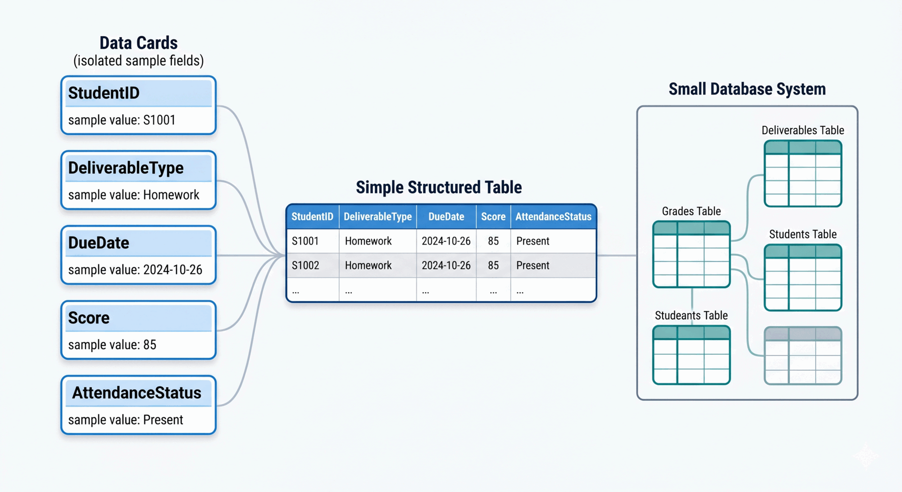
The Grading Database starts as a simple gradebook, but the same fields will later support a more reliable database structure.
Purpose
The point of this build is not to create a database — that begins in Chapter 4. The point is to feel how data behaves inside a spreadsheet: how fields and records work, how types and metadata give values meaning, how filters and pivots produce information, and where the structure begins to crack when data is repeated, shared, and updated. By the end, you should be able to explain in your own words why organizations eventually move from spreadsheets and flat files toward databases.
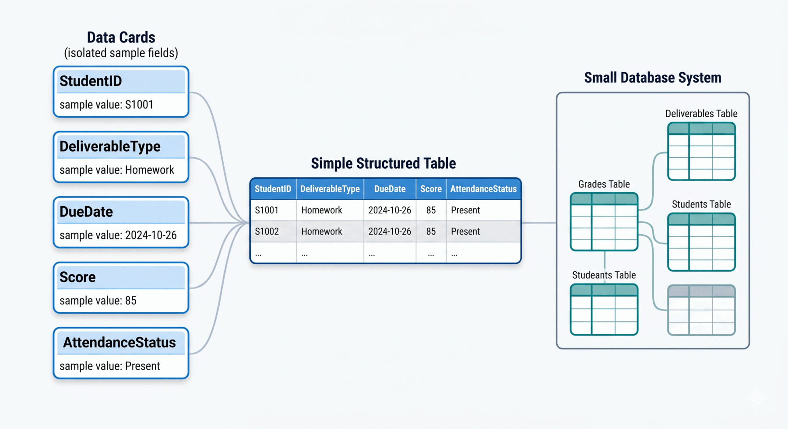
This build keeps the Grading Database small enough to inspect while previewing why structured tables matter.
What You Will Practice
- fields, records, and table discipline
- identifying data types and measurement levels
- writing a small data dictionary (metadata in practice)
- distinguishing missing values:
NULL,0,"", and" " - filters, sorts, and formula-based queries (
FILTER,SORT) - simulating a relationship with
VLOOKUP - summarizing data with pivot tables
- naming the data-quality dimensions when a value goes wrong
- recognizing where lifecycle and stewardship gaps appear in everyday data work
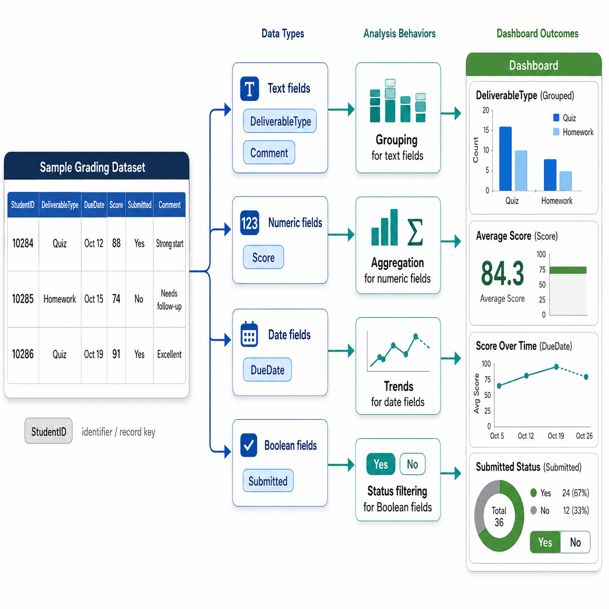
Different field types support different analytical behaviors: grouping, aggregation, trends, and status filters.
Before You Begin
You need a Google account and a blank Google Sheets workbook. Plan about 60 minutes. You will create three tabs in one workbook: GRADEBOOK, GRADE_WEIGHT, and DATA_DICTIONARY. Keep your workbook open as you read — every section asks you to do something small, then check what you see.
Create the Workbook and Three Sheets
Open Google Sheets and create a blank workbook. Name it:
LB03 — Grading Data Fundamentals — Your Name
Add three sheet tabs in this order: GRADEBOOK, GRADE_WEIGHT, DATA_DICTIONARY.
Why three tabs and not one. Chapter 3 stresses that themes of data should stay apart even before a database is involved. Grades, grading rules, and field definitions are three different themes, so each gets its own sheet.
Define the Structure Before Entering Data
A table is more than a grid. Before typing any values, decide what each column means.
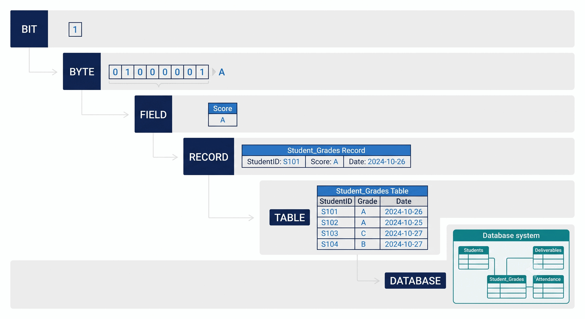
The data hierarchy reminds you that a spreadsheet table is one level in a larger data structure.
In row 1 of GRADEBOOK, enter these headers (column A through K):
RecordID, StudentID, FirstName, LastName, Email, Birthday, DeliverableType, DeliverableNumber, DueDate, Topic, Score.
In row 1 of GRADE_WEIGHT, enter (column A through D):
DeliverableType, ItemCount, CategoryWeight, WeightPerItem.
One row, one record. Each row in GRADEBOOK will represent one student receiving one score on one deliverable. Each row in GRADE_WEIGHT will describe one grading category.
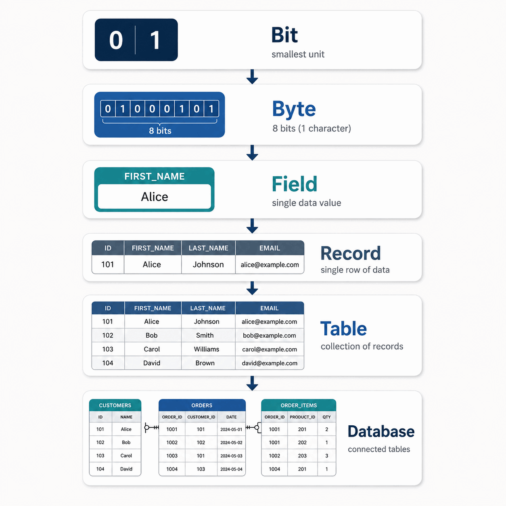
A field such as Score only becomes useful when it sits inside a record, table, and larger data system.
Build the Data Dictionary
Metadata is "data about data." It tells the next person (and your future self) what each field means and how it should behave. In the DATA_DICTIONARY tab, add these headers in row 1: FieldName, Sheet, Meaning, IntendedKind, WhyItMatters. Then enter the rows below.
| FieldName | Sheet | Meaning | IntendedKind | WhyItMatters |
|---|---|---|---|---|
RecordID |
GRADEBOOK | Identifies one grade record | Identifier | Distinguishes one row from another |
StudentID |
GRADEBOOK | Identifies one student | Identifier | Looks numeric but should never be averaged |
FirstName |
GRADEBOOK | Student first name | Text | Descriptive label |
LastName |
GRADEBOOK | Student last name | Text | Descriptive label |
Email |
GRADEBOOK | Student email address | Text | Contact value; should be consistent across rows |
Birthday |
GRADEBOOK | Student birth date | Date | Must be a real date so it sorts and filters correctly |
DeliverableType |
GRADEBOOK | Category of graded work | Categorical text | Used for grouping and lookups |
DeliverableNumber |
GRADEBOOK | Sequence within a category | Whole number | Distinguishes Quiz 1 from Quiz 2 |
DueDate |
GRADEBOOK | Original deadline | Date | Supports date math and turnaround analysis |
Topic |
GRADEBOOK | Topic of the deliverable | Text | Adds business context |
Score |
GRADEBOOK | Points earned, 0 to 100 | Numeric (ratio) | Can be summed, averaged, and compared |
DeliverableType |
GRADE_WEIGHT | Matching category key | Categorical text | Join key for VLOOKUP |
ItemCount |
GRADE_WEIGHT | Count of items in the category | Whole number | Supports per-item math |
CategoryWeight |
GRADE_WEIGHT | Total course weight for category | Numeric | Drives grade weighting |
WeightPerItem |
GRADE_WEIGHT | Weight of one item | Numeric | Used in weighted-contribution formula |
Why this small artifact matters. Without a dictionary, anyone using the workbook has to guess. With one, you have written down the shared meaning the chapter calls metadata. This same idea, scaled up, is what data governance teams maintain for real systems.
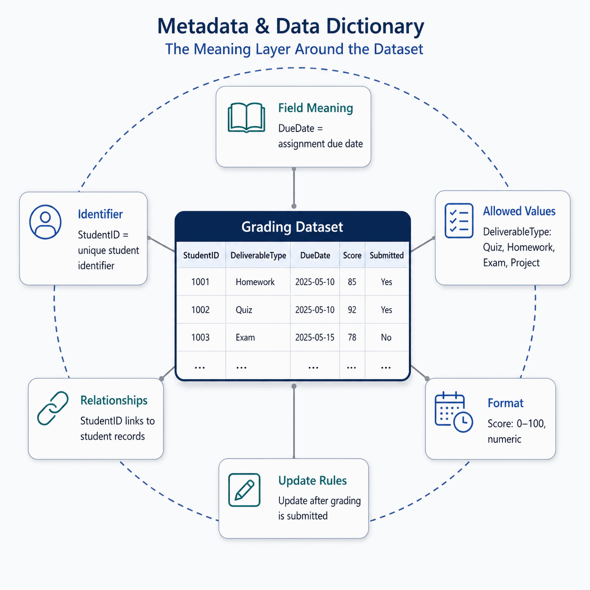
A data dictionary turns field names into shared rules that another person can follow.
Classify Your Fields by Measurement Level
The chapter introduced four measurement levels — nominal, ordinal, interval, ratio — because the level decides which calculations make sense. Try this quick classification in your own words, then check the model answers.
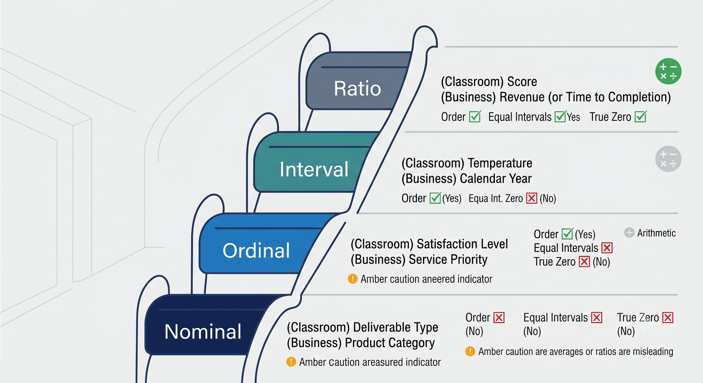
The measurement level tells you whether a field can be counted, ordered, compared by distance, or used in full arithmetic.
Quick classify. Label each field as Nominal, Ordinal, Interval, or Ratio.
| Field | Your answer | Model answer | Why |
|---|---|---|---|
StudentID |
? | Nominal | An identifier with no order or amount |
DeliverableType |
? | Nominal | Category labels with no inherent order |
SatisfactionRating (1–5) |
? | Ordinal | Ordered ranks, but the gap between 1 and 2 is not equal to 4–5 |
DueDate |
? | Interval | Ordered, equal calendar intervals, but no true zero |
Score (0–100) |
? | Ratio | Ordered, equal intervals, and a meaningful zero |
Why this matters. A spreadsheet will happily average an identifier and produce a number. The number is meaningless. Knowing the measurement level is what tells you which operations are honest.
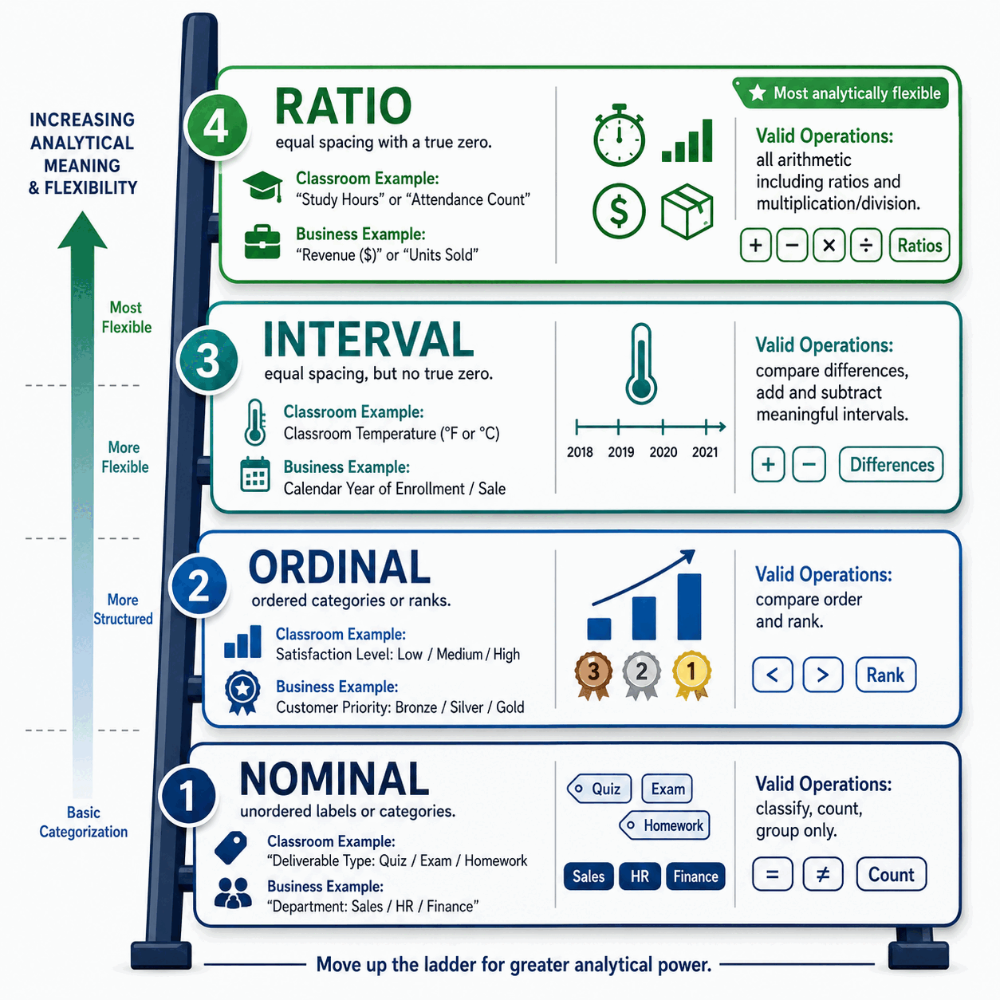
Valid operations depend on the meaning of the field, not just on whether the value looks like a number.
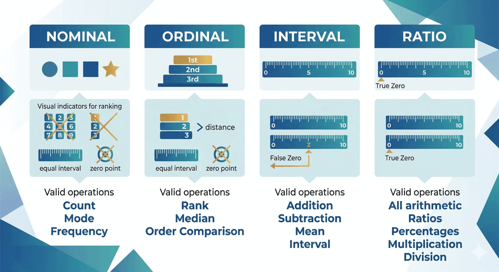
Moving from nominal to ratio data expands the calculations you can use, but only when the field meaning supports them.
Enter the Sample Data
Starting in row 2 of GRADEBOOK, enter these seven records:
| RecordID | StudentID | FirstName | LastName | Birthday | DeliverableType | DeliverableNumber | DueDate | Topic | Score | |
|---|---|---|---|---|---|---|---|---|---|---|
| 1 | 1001 | Alice | Johnson | alice@university.edu | 2004-05-14 | Quiz | 1 | 2026-09-08 | Database Basics | 92 |
| 2 | 1002 | Brian | Lee | brian@university.edu | 2003-11-22 | Quiz | 1 | 2026-09-08 | Database Basics | 84 |
| 3 | 1003 | Carla | Mendez | carla@university.edu | 2004-02-09 | Homework | 1 | 2026-09-10 | Entity Design | 95 |
| 4 | 1001 | Alice | Johnson | alice@university.edu | 2004-05-14 | Quiz | 2 | 2026-09-15 | SQL Basics | 88 |
| 5 | 1002 | Brian | Lee | brian@university.edu | 2003-11-22 | Quiz | 2 | 2026-09-15 | SQL Basics | 77 |
| 6 | 1003 | Carla | Mendez | carla@university.edu | 2004-02-09 | Exam | 1 | 2026-10-01 | Midterm | 91 |
| 7 | 1004 | Daniel | Kim | daniel@university.edu | 2004-08-17 | Project | 1 | 2026-11-05 | Final Project | 89 |
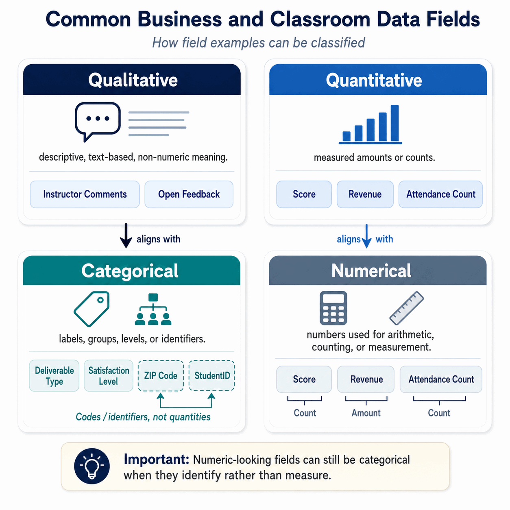
The same gradebook includes labels, categories, dates, identifiers, and measurements that each need different handling.
Then enter four rows in GRADE_WEIGHT:
| DeliverableType | ItemCount | CategoryWeight | WeightPerItem |
|---|---|---|---|
| Quiz | 4 | 20 | 5 |
| Homework | 3 | 30 | 10 |
| Exam | 2 | 40 | 20 |
| Project | 1 | 10 | 10 |
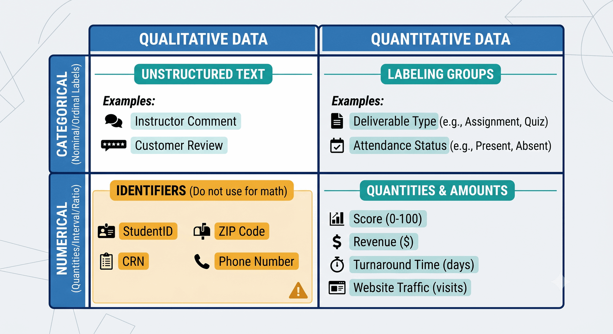
Classifying fields helps you decide which spreadsheet operation is meaningful and which would be misleading.
Notice the repetition already. Alice's name, email, and birthday already appear twice. So do Brian's and Carla's. That repetition will matter in a few sections.
Add Metadata, Validation, and Formatting
On both GRADEBOOK and GRADE_WEIGHT:
- Bold row 1.
- View → Freeze → 1 row so headers stay visible.
- Data → Create a filter on the header row.
- Format
BirthdayandDueDateas dates. - Format
Score,CategoryWeight, andWeightPerItemas numbers.
Add two validation rules to GRADEBOOK:
- On
DeliverableType(column G), add a dropdown populated fromGRADE_WEIGHT!A2:A5. - On
Score(column K), add a number rule that values must be between0and100.
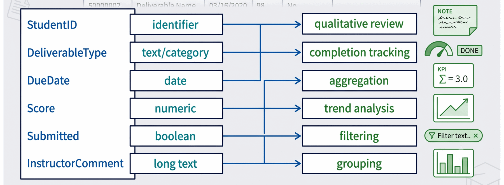
This example extends the gradebook idea to show how each data type supports a different analytical behavior.
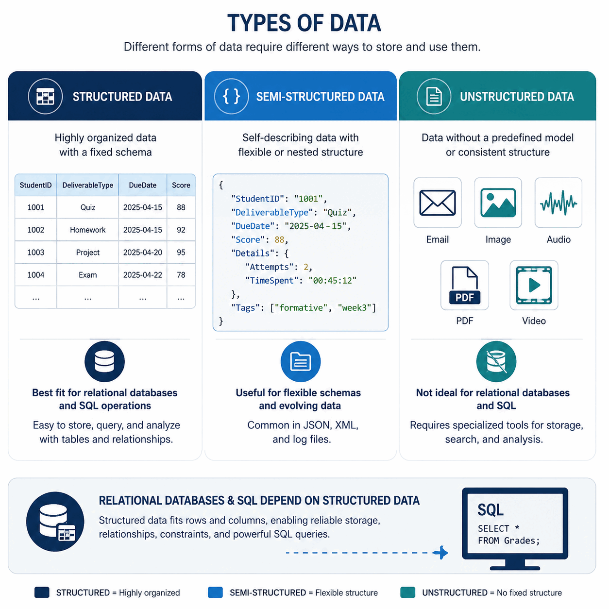
The LB uses structured data, but real organizations often also manage semi-structured and unstructured data.
Why this counts as metadata. A dropdown is not just a UI feature. It is a written rule that says "these are the only valid categories." That rule lives outside the values themselves, which is exactly what metadata does.
Represent Missing Values Carefully
The chapter showed that 0, "", " ", and NULL are four different things even when a cell looks empty. Try each one on a temporary 8th row, then delete the row before moving on.
| Cell action | What you stored | What it means |
|---|---|---|
Leave Score blank |
NULL |
No value was entered |
Type 0 in Score |
Real zero | Earned zero points |
Type a single space in Topic |
" " |
A stored space; still text |
Press Delete on Topic |
"" |
Empty text |
Try it. Filter Score for "is empty." Does the cell containing 0 appear? It should not, because 0 is a real number, not a missing value. That is the conceptual difference that will matter once you start writing SQL with IS NULL.
Filter, Sort, and Query the Data
Spreadsheets do not have a query engine, but filters, sorts, and a couple of formulas behave like early queries.
Filter for Quiz records. On GRADEBOOK, filter DeliverableType = Quiz. You should see four rows: Alice's two quizzes and Brian's two quizzes. Carla and Daniel disappear.
Filter for low scores. Clear the previous filter, then filter Score < 80. Only one row should remain: Brian Lee, Quiz 2, score 77.
Sort by score. Clear filters. Sort GRADEBOOK by Score descending. The top row should be Carla's Homework 1 (95). The bottom row should be Brian's Quiz 2 (77).
Formula version of those queries. In an empty area to the right of the table, type:
=FILTER(A2:K8, K2:K8<80)
and somewhere below it:
=SORT(A2:K8, 11, FALSE)
The FILTER formula returns the same single low-score row; SORT returns the same 7 rows in descending order by column 11 (Score).
Why these feel almost like queries but aren't. Both formulas hard-code the range A2:K8. Add row 9 later and the formulas will silently ignore it unless you update them by hand. A database query refers to the table by name, not by row range, which is why it keeps working as data grows.
Simulate a Relationship with VLOOKUP
VLOOKUP imitates what a database does when it joins two tables on a shared key. It is useful, but the relationship is not enforced.
Add three new headers in GRADEBOOK columns L, M, N:
CategoryWeight, WeightPerItem, WeightedContribution.
In L2, enter:
=VLOOKUP(G2, GRADE_WEIGHT!A:D, 3, FALSE)
In M2, enter:
=VLOOKUP(G2, GRADE_WEIGHT!A:D, 4, FALSE)
In N2, enter:
=(K2/100)*M2
Copy all three formulas down through row 8. Your output should match:
| RecordID | DeliverableType | Score | WeightPerItem | WeightedContribution |
|---|---|---|---|---|
| 1 | Quiz | 92 | 5 | 4.60 |
| 2 | Quiz | 84 | 5 | 4.20 |
| 3 | Homework | 95 | 10 | 9.50 |
| 4 | Quiz | 88 | 5 | 4.40 |
| 5 | Quiz | 77 | 5 | 3.85 |
| 6 | Exam | 91 | 20 | 18.20 |
| 7 | Project | 89 | 10 | 8.90 |
Why this is a fragile join. The lookup works only as long as DeliverableType values match exactly between sheets, the range GRADE_WEIGHT!A:D stays valid, and nobody overwrites a formula cell with a typed value. A real database relationship would not allow you to type quiz in lowercase if the related table only has Quiz. The spreadsheet will.
Summarize with Pivot Tables
Pivot tables are where rows of data turn into information. Select the GRADEBOOK data range, then Insert → Pivot table.
Average score by deliverable type. Set Rows = DeliverableType, Values = Score, summarized by AVERAGE. You should see:
| DeliverableType | Average Score |
|---|---|
| Exam | 91.00 |
| Homework | 95.00 |
| Project | 89.00 |
| Quiz | 85.25 |
Count records by student. In a second pivot, set Rows = StudentID, Values = RecordID, summarized by COUNTA:
| StudentID | Count |
|---|---|
| 1001 | 2 |
| 1002 | 2 |
| 1003 | 2 |
| 1004 | 1 |
The DIKW arc, made visible. A raw 77 in GRADEBOOK is data. An average quiz score of 85.25 is information. Noticing that quiz scores trail homework scores is the beginning of knowledge. Deciding to add a quiz-prep session is wisdom. The pivot table is the bridge from one to the next.
Add and Modify Data — Watch What Breaks
This is the most important section. Make each change and write down what you observe.
Add a new grade record. Insert this row at the bottom of GRADEBOOK:
| RecordID | StudentID | FirstName | LastName | Birthday | DeliverableType | DeliverableNumber | DueDate | Topic | Score | |
|---|---|---|---|---|---|---|---|---|---|---|
| 8 | 1001 | Alice | Johnson | alice@university.edu | 2004-05-14 | Homework | 2 | 2026-09-20 | Normalization Intro | 93 |
Check: did your =FILTER(...) formula include row 8? (No — it still uses A2:K8.) Did your pivot tables include it? (Only if you refresh or extend the source range.) Did VLOOKUP copy down to L8, M8, N8 automatically? (No — you must copy the formulas down.) This is the completeness dimension of data quality starting to slip.
Change one Alice email. On one Alice row only, change alice@university.edu to alice.johnson@university.edu. Leave her other rows alone. You now have one student stored with two different emails. That is the consistency and uniqueness dimensions failing at the same time, and the spreadsheet did nothing to stop you.
Change Quiz to quiz. In one Quiz row, replace Quiz with quiz. If your dropdown validation is set to "Reject input," the change is blocked. If it is set to "Show warning," the value is stored and your pivot table will now show two categories instead of one, and the VLOOKUP for that row may return #N/A. That is the validity dimension at work, and it shows why categorical text needs disciplined representation.
Change a category weight. In GRADE_WEIGHT, change WeightPerItem for Quiz from 5 to 6. Every weighted contribution for a Quiz row updates immediately. That is useful — and risky. A single typo in a supporting sheet has just rippled through every quiz score in the workbook with no warning. This is the accuracy dimension under stress.
Why a Flat File Breaks — Redundancy and Anomalies
The previous section showed symptoms. This section names the underlying problems. These four terms are the structural reason organizations move from spreadsheets to databases, and you will meet them again in Chapter 4.
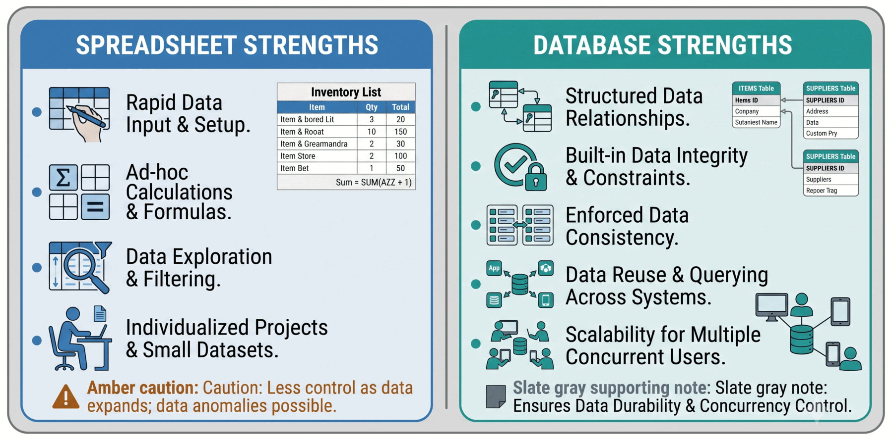
Spreadsheets are useful for quick individual work, while databases become stronger when shared structure, validation, and reuse matter.
Data redundancy. Look at GRADEBOOK. You have four students (1001, 1002, 1003, 1004) but eight stored copies of their identity data — Alice's name, email, and birthday appear three times; Brian's and Carla's each appear twice. Every new grade for an existing student copies their identity again. Storage is cheap; the real cost is that every copy is a future chance for the copies to disagree.
Update (modification) anomaly. You already saw this when you changed one of Alice's emails. To update her email correctly, you must find and change every row where she appears. Miss one and the workbook now stores two different emails for the same person. There is no single Alice record to update — only scattered copies.
Insertion anomaly — try it. Try to add a new student, Emma Park, StudentID 1005, who has not yet received any grades. Where does she go? GRADEBOOK requires a DeliverableType, DueDate, Score, and so on for every row. You can either invent a blank or placeholder grade row just to record that Emma exists, or leave her out of the workbook entirely. Neither is honest. Write one sentence in a scratch cell describing what felt wrong about adding Emma. The same problem blocks adding a brand-new DeliverableType that no one has been graded on yet.
Deletion anomaly — try it. Now delete RecordID 7 (Daniel Kim, Project 1). You did not just delete a grade. You also deleted the only record that Daniel exists, and the only record that the Project category has ever been used. Refresh your pivot tables and confirm Daniel and Project are gone. Write one sentence about what was lost. Then press Ctrl+Z to undo before continuing.
Query fragility. Even when the data is correct, the spreadsheet makes asking questions awkward. Formulas like =FILTER(A2:K8, ...) hard-code a row range, so new rows silently drop out. Quiz, quiz, and QUIZ count as three categories in a pivot. Nothing forces DeliverableType values to match between sheets, so VLOOKUP can return #N/A without warning. And you cannot ask "list all students" separately from "list all grades" because students and grades live in the same rows.
Each problem, each fix.
| Problem | What you saw in the workbook | Root cause | Chapter 4 fix |
|---|---|---|---|
| Data redundancy | Alice's identity stored three times | Students and grades share one table | Separate Students and Grades tables |
| Update anomaly | Two different emails for the same Alice | Many copies of one fact | One row per student; grades reference the student |
| Insertion anomaly | No clean place for Emma Park | Identity only exists alongside a grade | Independent Students table |
| Deletion anomaly | Removing Daniel's grade removed Daniel | Identity only exists alongside a grade | Independent Students table |
| Query fragility | Hard-coded ranges, case drift, #N/A lookups |
No enforced types, keys, or table names | Typed columns, enforced relationships, queries by table name |
A spreadsheet lets these problems happen. A database is designed to prevent them. That is the move you will make in Chapter 4.
Lifecycle Thinking in One Minute
The chapter introduced the data lifecycle — collection, storage, cleaning, integration, use, retention, archiving, anonymization, and deletion. Your small workbook already shows why this matters.
Try it. Ask yourself three questions about your GRADEBOOK:
- Retention: How long should you keep Brian's quiz scores? After the course ends, do the individual scores still need to exist, or is the final grade enough?
- Anonymization: If you were asked to share your workbook with a colleague to demonstrate spreadsheet fragility, which columns would you strip first to protect student privacy?
- Deletion: When you deleted Daniel's row during the deletion-anomaly exercise, you accidentally removed the only record that Daniel and the Project category existed. What did you lose that you did not intend to lose?
Write one sentence for each question. The point is not to produce a policy document. The point is to notice that everyday data decisions — what to keep, what to share, when to delete — are lifecycle and ethics decisions, not just technical ones. When organizations skip these questions, they end up with data that is either too valuable to delete or too risky to keep, and nobody knows who owns the decision.
Check Your Work
Before moving on, confirm each of these. If any answer is off, retrace the section that produced it.
| Check | Expected value |
|---|---|
Number of records in GRADEBOOK (after adding row 8) |
8 |
Number of unique StudentID values |
4 |
Result of filtering Score < 80 |
1 row (Brian, Quiz 2, 77) |
WeightedContribution for RecordID 6 (Carla, Exam) |
18.20 |
| Average Quiz score from the pivot (original 7 rows) | 85.25 |
| Count of records for StudentID 1001 (after adding row 8) | 3 |
Dropdown values available for DeliverableType |
Quiz, Homework, Exam, Project |
What This Shows
Each Chapter 3 idea appeared somewhere concrete in this build:
| Chapter 3 idea | Where it appeared in this LB |
|---|---|
| Data and context | Raw values became meaningful only after headers and a dictionary |
| Fields and records | One row in GRADEBOOK = one grade for one student |
| Data types and measurement level | Quick-classify mini-check; date and number formatting |
| Metadata | DATA_DICTIONARY tab and dropdown rules |
| Missing values | NULL, 0, "", and " " exercise |
| Spreadsheet queries | Filters, sorts, =FILTER, =SORT |
| Simulated relationships | VLOOKUP from GRADEBOOK to GRADE_WEIGHT |
| Pivot summaries | Average score and record count pivots |
| Data quality dimensions | Completeness, consistency, uniqueness, validity, accuracy |
| Spreadsheet fragility | Ranges, casing, repeated data, easy overwrites |
| Data lifecycle and stewardship | Retention, anonymization, and deletion questions about your workbook |
A spreadsheet helped you see the data. A database is designed to manage the data more reliably over time. That gap is the bridge into Chapter 4.
Common Mistakes
- Averaging
StudentIDbecause Sheets allows it. The result is a number with no business meaning. - Entering dates as text (
9/8/26) so they cannot be sorted or filtered as dates. - Letting
Quiz,quiz, andQUIZaccumulate as three different categories. - Overwriting a
VLOOKUPcell with a typed value, breaking the link without warning. - Hard-coding ranges like
A2:K8inFILTERorSORT, so new rows silently drop out. - Treating a blank cell,
0, and""as the same thing in formulas and filters. - Storing student identity on every grade row, so one student ends up with two emails after a single edit.
Submit or Save
There is no submission for this LB. Save your workbook as LB03 — Grading Data Fundamentals — Your Name in your course Drive folder. You will reuse these same moves in Lab 03 — Transferring Data Fundamentals to PetVax, where you will rebuild this structure for a messy veterinary clinic record and submit the workbook for a grade.
Peek Ahead — Chapter 4
In Chapter 4, you will move from a spreadsheet to Microsoft Access, and the four problems you just named will each get a structural fix:
- Data redundancy disappears once student identity lives in its own
Studentstable and grades reference the student byStudentIDinstead of repeating name, email, and birthday on every row. - Update anomalies stop because an email lives in exactly one place; changing it once changes it everywhere it is shown.
- Insertion anomalies stop because a new student can be added to
Studentswithout needing a grade, and a new deliverable category can be added without needing a student. - Deletion anomalies stop because removing a grade no longer removes the student or the category — they exist in their own tables.
- Query fragility is replaced by typed columns, validation rules the system actually enforces, and queries that refer to tables by name rather than to fragile cell ranges.
Every place this LB felt fragile is a place Chapter 4 will show how a database is designed to be sturdy.
Chapter 3 Term Treasury — Understanding Data Fundamentals

| Term / Concept | Definition | Business Significance | Examples |
|---|---|---|---|
| Accuracy | A data quality dimension that asks whether a stored value correctly reflects the real-world fact it is supposed to represent. | Inaccurate data leads to wrong reports, bad forecasts, and poor decisions no matter how polished the dashboard looks. | A score entered as 85 when the student earned 58; a customer address that is out of date. |
| Big Data | Datasets so large, fast, or varied that traditional tools cannot easily store, process, or analyze them; commonly described by the three Vs: volume, velocity, and variety. | Enables organizations to spot patterns, personalize services, and optimize operations at a scale impossible with small datasets — but only when fundamentals are sound. | A retailer analyzing billions of clicks to recommend products; a logistics company adjusting delivery routes minute by minute from streaming sensor data. |
| Binary Data | Data stored as encoded bytes meant for software to read, such as images, audio, PDFs, videos, and .xlsx files. |
Most organizational records arrive as binary data (scanned forms, photos, audio notes) and must be classified, extracted, or linked before structured analysis can use them. | A scanned invoice saved as a PDF; a product photo in a catalog database; an .accdb database file. |
| Bit | The smallest unit of digital data, represented as a 0 or a 1. | Bits are the invisible foundation of every stored value; understanding them helps students see that all data, from a quiz score to a video, rests on the same digital building blocks. | A single 0 or 1 in storage; eight bits form one byte. |
| Byte | A group of 8 bits, commonly used to represent one character or other small unit of digital information. | Bytes connect the abstract world of bits to real characters, numbers, and symbols that people and systems can read. | The letter A stored as one byte; a short text field may hold up to 255 bytes. |
| Categorical Data | Data that places observations into labels or groups rather than measuring them as quantities. | Categorical fields support segmentation, filtering, and grouping — the backbone of dashboards that answer "how many in each category?" | DeliverableType (Quiz, Homework, Exam); Region (Northeast, Southeast); PaymentMethod (Credit, Debit, Cash). |
| Completeness | A data quality dimension that asks whether all required data is present. | Missing values create blind spots in reports, inflate or deflate averages, and can hide problems until a decision is already made. | An attendance record with no status entered; a customer record missing an email address needed for billing. |
| Consistency | A data quality dimension that asks whether the same fact is represented the same way across records, systems, or time. | Inconsistent data breaks joins, splits categories in reports, and forces analysts to clean instead of analyze. | One instructor recording Quiz and another recording quiz; phone numbers stored with and without dashes. |
| CSV (Comma-Separated Values) | A plain-text flat-file format that uses commas to separate fields and line breaks to separate records. | CSV files are the most common format for moving data between systems, but they carry no types, rules, or relationships — only raw values. | Exporting a gradebook to grades.csv; importing customer lists from one platform to another. |
| Data Dictionary | A formal record of shared field definitions, meanings, formats, allowed values, and usage rules. | A data dictionary is the cheapest way to prevent two departments from reporting different numbers for the same question — it gives people and systems a common language. | A three-field dictionary defining StudentID as an identifier (not a quantity), Score as 0–100, and DueDate as the original deadline. |
| Data Governance | The roles, standards, policies, and processes used to manage data consistently and accountably over time. | Governance is what keeps data quality from slipping back after it is cleaned; without it, the same errors return month after month. | A data steward who approves new field definitions; a policy that requires documentation before a field is added to a shared system. |
| Data Hierarchy | The progression from bits to bytes to fields to records to tables to databases, where each level adds more organization and meaning. | The hierarchy explains why a database is more powerful than a pile of values: each level builds structure that makes the next level possible. | A 92 in the Score field of one grade record inside a Student_Grades table within the Grading Database. |
| Data Lifecycle | The sequence of stages through which data is collected, stored, cleaned, integrated, used, and eventually retained, archived, anonymized, or deleted. | Data that outlives its purpose becomes a cost and a risk; lifecycle thinking ensures organizations keep useful data and retire the rest. | A grading dataset archived after the course ends; customer records anonymized or deleted when retention periods expire. |
| Data Redundancy | The same fact stored in many places, so a change must be made in every copy or the data silently disagrees with itself. | Redundancy is the root cause of update anomalies and inconsistent reports; databases are designed to reduce it by separating themes into related tables. | A student's name and email repeated in every grade row of a flat file; a product price copied into every order line instead of stored once in a products table. |
| Data Type | The classification of a stored value that determines its meaning, valid operations, acceptable formats, and storage behavior. | Choosing the wrong type breaks calculations, hides values, and makes reports unreliable — even when every value was entered correctly. | Storing Score as text prevents averaging; storing DueDate as text prevents date math; treating StudentID as a number invites meaningless averages. |
| Deletion Anomaly | Losing one fact unintentionally when deleting a row because multiple themes are mixed together in a flat file. | Deletion anomalies can erase the only record that a customer, student, or product ever existed, creating permanent gaps in organizational memory. | Deleting the only grade for a student also removes the only record that the student was ever enrolled. |
| Field | A single stored attribute within a table column, such as Score, LastName, or DueDate. |
Fields are the atomic units of structured data; every query, filter, sort, and calculation begins with a field's name, type, and meaning. | The Score column in a gradebook; the CustomerID column in an orders table. |
| Flat File | A single, non-relational data structure that stores rows of values without built-in support for relationships, types, or constraints across multiple datasets. | Flat files are easy to create but become fragile as data grows; they are the "before" picture that motivates why databases exist. | A single CSV file mixing student names, grades, and deliverable descriptions in one sheet; a spreadsheet used as the only customer list for a growing business. |
| Insertion Anomaly | The inability to add a new fact without also adding unrelated facts, because multiple themes are forced into one flat structure. | Insertion anomalies block routine business operations — you cannot add a new customer, product, or student until a transaction exists to carry it. | You cannot record a new student in a flat grade file until that student receives a grade. |
| Interval Data | Data with equal intervals between values but no true zero point, so ratios are not meaningful. | Knowing the level prevents misleading calculations — you can say one date is 30 days later than another, but not that it is "twice the date." | Calendar dates, temperature in Celsius or Fahrenheit, IQ scores. |
| Metadata | Data about data that explains what stored values mean, how they should be interpreted, what format they should use, and what rules apply to them. | Metadata is the difference between a field named DDate that nobody understands and a field everyone knows is the original deadline, not the submission date. |
A data dictionary entry for DueDate; validation rules on Score (0–100); a dropdown list of allowed DeliverableType values. |
| Nominal Data | Data that labels categories without implying any order among them. | Nominal fields are the most common type in business — region, product category, payment method — and they support counting and segmentation, not ranking. | DeliverableType (Quiz, Homework, Exam); Region; PaymentMethod. |
| NULL | A marker indicating that no value is stored in a field — distinct from zero, an empty string, or a blank space. | NULL values are ambiguous (not submitted? not yet graded? excused?) and require special handling in queries; misunderstanding them produces wrong counts and averages. | A blank Score cell where a grade has not been entered; a missing Email field for a customer. |
| Numerical Data | Data that represents quantities and can support arithmetic operations when the measurement level allows it. | Numerical fields power totals, averages, trends, and ratios — the calculations that turn raw tables into dashboards and KPIs. | Score (92), Revenue ($45,000), UnitsSold (1,200). |
| Ordinal Data | Data that places categories in rank order without guaranteeing equal distance between the categories. | Ordinal scales are common in surveys and ratings, but averaging them can mislead — the gap between "Satisfied" and "Very Satisfied" is not a number. | Customer satisfaction rating (1–5); letter grades (A, B, C); education level (High School, Bachelor's, Master's). |
| Pivot Table | A spreadsheet tool that summarizes rows of data by grouping, counting, averaging, or totaling values across categories. | Pivot tables turn raw data into information without writing code; they are the spreadsheet equivalent of a GROUP BY query and show students the DIKW arc in action. |
Averaging quiz scores by deliverable type in Google Sheets; counting grade records per student. |
| Plain Text | Human-readable character data such as names, notes, log files, CSV files, and SQL scripts. | Plain text is portable and inspectable, but it carries no built-in rules — consistency depends entirely on the people entering and maintaining it. | A .csv file opened in Notepad; a .sql script; field values such as Alice or Homework. |
| Primary Key | A field (or combination of fields) that uniquely identifies each record in a table. | Without a primary key, you cannot reliably find, update, or connect a specific record — the row's position becomes its only identity, and positions change. | StudentID in a Students table; RecordID in a gradebook; a composite key of StudentID + DeliverableID in a grades table. |
| Qualitative Data | Data that describes qualities, labels, or characteristics rather than measurable amounts. | Qualitative data explains why something happened; it provides the context that quantitative data alone cannot supply. | An instructor comment such as "Great improvement"; a customer review describing product satisfaction. |
| Quantitative Data | Data that represents measurable quantities and supports arithmetic operations when the measurement level permits. | Quantitative data drives KPIs, dashboards, and forecasts — it answers "how much," "how many," and "how often." | A score of 88; $45,000 in revenue; 1,200 units sold. |
| Ratio Data | Data with equal intervals and a true zero point, making ratios, percentages, and all arithmetic operations meaningful. | Ratio data supports the widest range of analysis — you can say one value is twice another, calculate percentage change, and compare across units. | Revenue ($0 means no revenue), units sold, hours worked, Score (0–100). |
| Record | A complete row of related field values describing one instance of something. | Records are the "one thing" that queries count, filters include or exclude, and relationships connect across tables. | One complete grade entry: RecordID=1, StudentID=1001, Score=92. |
| Semi-Structured Data | Data that has some recognizable organization, such as tags or key-value labels, but does not follow a rigid table schema. | Semi-structured data is the bridge format — APIs, web services, and configuration files use it to exchange data between structured systems. | JSON from a web API; XML configuration files; a log file with timestamped entries. |
| Spreadsheet | A grid-based tool (such as Microsoft Excel or Google Sheets) used to enter, view, calculate, and analyze data in a flexible, visual workspace. | Spreadsheets are the starting point for most business data work — useful for exploration and small datasets, but they become fragile when data must be shared, updated repeatedly, and connected across themes. | A Google Sheets gradebook with filters and pivot tables; an Excel budget tracker used by one person. |
| Structured Data | Data that fits a predefined format with clear fields, rows, expected types, and enforced rules. | Structured data is what relational databases and SQL are designed to manage — it makes filtering, joining, aggregating, and validating data reliable at scale. | A student grades table with defined columns, types, and validation rules; a customer orders table in a database. |
| Table | A structured collection of records in which each row represents one instance and each column represents one clearly defined attribute, with consistent types and rules. | Tables are the organizing unit of databases — separating data into well-designed tables is what prevents redundancy, anomalies, and the fragility of flat files. | The Student_Grades table in the Grading Database; a Products table in an inventory system. |
| Timeliness | A data quality dimension that asks whether data is current and available when needed. | A dashboard built on last month's data may answer last month's question perfectly while being useless for today's decision. | A sales report generated from data that is two weeks old when the manager needs real-time inventory levels. |
| Uniqueness | A data quality dimension that asks whether each real-world entity is represented only once in a dataset. | Duplicate records inflate counts, distort averages, and waste effort — one customer counted three times looks like growth that is not real. | A student listed as Jane Smith, Jane M. Smith, and J Smith in the same grading file. |
| Unstructured Data | Data that has no fixed schema or predefined organization, such as emails, PDFs, images, audio, and video files. | Unstructured data is the largest and fastest-growing category in most organizations; extracting value from it requires classification, cleaning, and routing before structured analysis can begin. | Customer emails, scanned forms, surveillance video, social media posts, voice recordings. |
| Update Anomaly | A data problem where changing one fact requires editing it in many places, and missing even one copy creates inconsistency. | Update anomalies turn routine changes (a new email, a corrected course title) into error-prone multi-step operations that undermine trust in the data. | Updating a student's email address in every grade row instead of once in a Students table. |
| Validity | A data quality dimension that asks whether stored values follow defined rules, formats, ranges, and expectations. | Invalid data can be complete, consistent, and timely — and still wrong. Validity catches values that should never have been allowed into the system. | A Score of 150 when the allowed range is 0–100; a DueDate of February 30. |
| VLOOKUP | A spreadsheet function that searches for a value in one column and returns a related value from another column, simulating a database join. | VLOOKUP is the most common way students first experience connecting data across sheets — but it is fragile, depends on exact matches, and has no enforcement, which is why databases replace it with real relationships. | =VLOOKUP(G2, GRADE_WEIGHT!A:D, 3, FALSE) to pull category weight into a gradebook row. |
Acronyms and Abbreviations
| Abbreviation | Full Form | Brief Meaning | Where It Appears |
|---|---|---|---|
| CSV | Comma-Separated Values | A plain-text format that uses commas to separate fields and line breaks to separate records. | Spreadsheets-to-databases bridge and data exchange discussion. |
| JSON | JavaScript Object Notation | A lightweight semi-structured format using key-value pairs, common in APIs and web services. | Semi-structured data examples. |
| NOIR | Nominal, Ordinal, Interval, Ratio | The four measurement levels that determine which calculations are meaningful for a field. | Measurement levels and classification section. |
| XML | eXtensible Markup Language | A semi-structured format that uses tags to label data, used in configuration files and data exchange. | Semi-structured data examples. |
Chapter 3: Review and Reflection
title: "Chapter 3: Review and Reflection" chapter: 3 section: "Review and Reflection" description: "Provides review, reflection, and personal reflection questions to help students consolidate Chapter 3 concepts and connect data fundamentals to spreadsheet practice, database structure, and responsible decision-making." keywords: - review questions - reflection questions - BITM330 - data fundamentals - metadata - data quality - spreadsheets - databases - chapter 3 date: 2026-03-22 author: "Nimrod Dvir"

Use these questions to review the chapter's core ideas and think more carefully about how raw values become meaningful, trustworthy, and ready for structured systems.
Review Questions
These questions help you review the chapter's main ideas, terms, frameworks, and examples.
- How does Chapter 3 define data, and why does the chapter argue that recorded values become useful only when they are placed in context?
- What does the chapter mean by saying that data is an infinite spring rather than the new oil?
- What are the levels of the data hierarchy, and how does the hierarchy help explain the move from single values to a database?
- How does the DIKW hierarchy differ from the R.E.A.D. model, and what does each one help you understand about data work?
- What is the difference between qualitative and quantitative data, and between categorical and numerical data?
- What are the four measurement levels, and why do those levels determine which analyses are valid?
- How does the chapter distinguish structured, semi-structured, and unstructured data?
- What is the difference among a spreadsheet, a table, and a CSV file, and why is that distinction important?
Reflection Questions
These questions encourage you to interpret the chapter, connect ideas, and think critically about how they apply in practice.
- Why does Chapter 3 insist that semantic meaning matters more than a field's visual appearance?
- How does the Let's Build Google Sheets exercise show both the strengths and the limits of spreadsheets?
- Why is a
VLOOKUP-based connection between sheets weaker than a true database relationship? - How do repeated facts in a flat file create inconsistency and update problems over time?
- Why does the chapter treat metadata as governance infrastructure rather than optional documentation?
- Which data quality dimensions matter most in a grading or business system, and why is it risky to ignore any of them?
- Why does lifecycle thinking matter before an organization begins advanced analytics, dashboards, or AI-driven decisions?
Personal Reflection Questions
These questions help you connect the chapter to your own habits, goals, strengths, and developing professional skills.
- When you work with numbers, labels, or dates in school or at work, how often do you stop to ask what the values actually mean before analyzing them?
- Which Chapter 3 distinction feels most important for your own learning right now: data versus information, identifier versus quantity, spreadsheet versus database, or metadata versus raw values?
- Think about a spreadsheet you have used before. At what point did it start to feel harder to trust, maintain, or update?
- Which part of the Let's Build exercise would have been easiest for you, and which part would have exposed the most weakness in your current skills?
- If you had to create a small data dictionary for one school or work dataset, which fields would you define first, and why?
- Have you ever seen a report, dashboard, or spreadsheet output that looked precise but still felt misleading? What made you question it?
- As you think about your future career, why might privacy, fairness, and responsible data handling matter even if you are not working in a technical database role?
Answer Key
Review
Question 1: How does Chapter 3 define data, and why does the chapter argue that recorded values become useful only when they are placed in context?
Suggested Answer: Chapter 3 defines data as values, symbols, measures, or observations that represent information about the world and can be organized, structured, and analyzed. The chapter argues that recorded values alone are not enough because a value such as 92, Quiz, or 2026-03-19 means little without context about what field it belongs to, how it relates to other values, and what decision it supports. Context is what turns isolated data into interpretable information.
Question 2: What does the chapter mean by saying that data is an infinite spring rather than the new oil? Suggested Answer: The chapter means that data is reusable and grows in value through combination, interpretation, and repeated use. Oil is consumed when it is used, but data can support multiple analyses, reports, and decisions without being depleted. The metaphor matters because it pushes organizations to focus less on hoarding raw data and more on structuring, governing, and reusing it well.
Question 3: What are the levels of the data hierarchy, and how does the hierarchy help explain the move from single values to a database? Suggested Answer: The levels are bit, byte, field, record, table, and database. The hierarchy shows how simple digital units become stored values, how values combine into records, how records collect into tables, and how related tables form a database. It helps students see that a database is not just a big list. It is a structured system built from smaller units that gain meaning as organization increases.
Question 4: How does the DIKW hierarchy differ from the R.E.A.D. model, and what does each one help you understand about data work? Suggested Answer: DIKW explains a progression of meaning from data to information to knowledge to wisdom. It helps explain how interpretation and judgment deepen understanding. The R.E.A.D. model focuses on the work required to move from stored values toward use through representation, expression, association, and deployment. DIKW explains levels of understanding, while R.E.A.D. explains how data work supports that progression in practice.
Question 5: What is the difference between qualitative and quantitative data, and between categorical and numerical data?
Suggested Answer: Qualitative data describes qualities, labels, or characteristics, while quantitative data represents measurable amounts. Categorical data places observations into groups, and numerical data represents quantities that can support arithmetic when the measurement level allows it. These distinctions overlap but are not identical. For example, DeliverableType is qualitative and categorical, while Score is quantitative and numerical.
Question 6: What are the four measurement levels, and why do those levels determine which analyses are valid? Suggested Answer: The four measurement levels are nominal, ordinal, interval, and ratio. They determine whether data has order, equal intervals, and a true zero point. Those properties control what operations make sense. You can count nominal data, rank ordinal data, compare differences in interval data, and perform full arithmetic on ratio data. If the level is misunderstood, a system can perform calculations that look legitimate but are analytically invalid.
Question 7: How does the chapter distinguish structured, semi-structured, and unstructured data? Suggested Answer: Structured data fits predefined fields, rows, and types, such as a grades table. Semi-structured data has recognizable labels or tags but a more flexible structure, such as JSON or XML. Unstructured data has no fixed schema, such as emails, PDFs, images, audio, or video. The chapter focuses mainly on structured data because it is the form most directly suited to relational databases, SQL, and repeatable analysis.
Question 8: What is the difference among a spreadsheet, a table, and a CSV file, and why is that distinction important? Suggested Answer: A spreadsheet is a tool for entering, viewing, calculating, and analyzing data in a grid. A table is a disciplined data structure in which rows represent instances and columns represent clearly defined attributes. A CSV file is a plain-text flat file that stores rows of values but does not enforce types, relationships, or rich metadata. The distinction matters because a spreadsheet can contain a well-formed table, a weak table, or several informal grids, and a CSV may preserve data values without preserving the structure needed for reliable reuse.
Reflection
Question 1: Why does Chapter 3 insist that semantic meaning matters more than a field's visual appearance? Suggested Answer: Chapter 3 insists on semantic meaning because values that look numeric are not always quantities. Student IDs, CRNs, ZIP codes, and phone numbers contain digits, but arithmetic on them is meaningless. Good analysis depends on what a field represents, not what it looks like on the screen. If teams confuse appearance with meaning, they create precise-looking but conceptually weak reports.
Question 2: How does the Let's Build Google Sheets exercise show both the strengths and the limits of spreadsheets? Suggested Answer: The exercise shows that spreadsheets are useful because they allow quick setup, visible data entry, flexible formulas, filters, sorting, and pivot tables. At the same time, it shows their limits through repeated student information, optional validation, formula fragility, and weak relationship handling across sheets. The exercise makes the chapter's argument concrete: spreadsheets are good for small-scale work and exploration, but they become fragile when data must be structured, connected, reused, and governed reliably.
Question 3: Why is a VLOOKUP-based connection between sheets weaker than a true database relationship?
Suggested Answer: A VLOOKUP-based connection is weaker because it depends on exact text matches, stable ranges, and formulas that can be overwritten or broken. It simulates a relationship, but it does not enforce one. A database relationship, by contrast, is built into the structure through keys and rules that protect integrity. The spreadsheet approach can work, but it relies more on user discipline and is therefore easier to break.
Question 4: How do repeated facts in a flat file create inconsistency and update problems over time? Suggested Answer: Repeated facts create multiple copies of the same real-world information across many rows. If one copy is updated and another is not, the dataset begins to contradict itself. In the chapter and the Let's Build exercise, changing Alice's email in only one row creates conflicting records for the same student. This is why flat files become fragile over time and why related tables are needed to store shared facts once and reference them consistently.
Question 5: Why does the chapter treat metadata as governance infrastructure rather than optional documentation? Suggested Answer: The chapter treats metadata as governance infrastructure because metadata defines field meaning, allowed values, formats, ownership, and usage rules. That guidance shapes how data is entered, interpreted, and trusted across people and systems. A data dictionary is not just a note for later. It is part of the control structure that keeps reports, KPIs, and shared decisions aligned around the same definitions.
Question 6: Which data quality dimensions matter most in a grading or business system, and why is it risky to ignore any of them? Suggested Answer: Accuracy, completeness, consistency, timeliness, validity, and uniqueness all matter because each one protects a different part of trust. In a grading system, inaccurate scores are unfair, incomplete records hide risk, inconsistent categories distort summaries, stale data weakens intervention timing, invalid values break rules, and duplicate records can inflate counts or confuse identity. Ignoring one dimension often damages the reliability of the others, so quality has to be managed as a whole.
Question 7: Why does lifecycle thinking matter before an organization begins advanced analytics, dashboards, or AI-driven decisions? Suggested Answer: Lifecycle thinking matters early because analytics quality depends on how data was collected, stored, cleaned, integrated, retained, and disposed of long before a dashboard or AI model uses it. If those earlier stages are weak, later analysis becomes misleading no matter how sophisticated the tool looks. The chapter's logic is that advanced analytics cannot rescue disorganized inputs. They amplify the consequences of weak structure and weak governance.
Personal Reflection
Question 1: When you work with numbers, labels, or dates in school or at work, how often do you stop to ask what the values actually mean before analyzing them? Suggested Answer: A thoughtful answer would admit that it is easy to jump straight into sorting, averaging, or graphing values because spreadsheet tools make analysis feel immediate. A stronger habit is to pause and ask what the field represents, whether it is an identifier or a true quantity, and what kind of comparison is valid. That shift reflects one of Chapter 3's central lessons about context and semantic meaning.
Question 2: Which Chapter 3 distinction feels most important for your own learning right now: data versus information, identifier versus quantity, spreadsheet versus database, or metadata versus raw values? Suggested Answer: A plausible answer would name one distinction and explain why it changes how the student thinks about data work. For example, identifier versus quantity may feel most important because it prevents meaningless averages, while spreadsheet versus database may stand out because it changes how a student thinks about scale and structure. The strongest response ties the distinction to a real learning challenge rather than giving a generic preference.
Question 3: Think about a spreadsheet you have used before. At what point did it start to feel harder to trust, maintain, or update? Suggested Answer: A good response might describe the moment when repeated names, copied formulas, version confusion, or inconsistent updates began to appear. For many students, trust drops when the sheet starts depending on manual cleanup or when several people edit it differently. That experience connects directly to the chapter's explanation of spreadsheet fragility and the need for more disciplined structure over time.
Question 4: Which part of the Let's Build exercise would have been easiest for you, and which part would have exposed the most weakness in your current skills?
Suggested Answer: A reasonable answer might say that entering records, sorting, or building a pivot table would feel easiest because those steps are visible and familiar. The harder part might be defining data types, building a data dictionary, or understanding why the VLOOKUP approach is fragile. The best answer explains what feels strong, what feels weak, and what that reveals about the student's current level of data literacy.
Question 5: If you had to create a small data dictionary for one school or work dataset, which fields would you define first, and why? Suggested Answer: A strong answer would begin with fields that drive identity, timing, and analysis, such as an identifier, a status field, a date field, and a key numeric measure. Those fields matter because mistakes there spread quickly into reports and decisions. The response should show that metadata is most valuable where meaning, rules, and interpretation need to be shared clearly.
Question 6: Have you ever seen a report, dashboard, or spreadsheet output that looked precise but still felt misleading? What made you question it? Suggested Answer: A model answer could describe a case where numbers were displayed cleanly, but the definitions were unclear, the data seemed outdated, or the categories were inconsistent. The student might have noticed missing context, strange totals, or values that looked too exact to trust. That reaction reflects a growing awareness that polished output is not the same thing as trustworthy information.
Question 7: As you think about your future career, why might privacy, fairness, and responsible data handling matter even if you are not working in a technical database role? Suggested Answer: A thoughtful response would explain that many professional roles depend on data even when the person is not building the database directly. Managers, analysts, marketers, health professionals, and operations staff all influence what data is collected, how it is interpreted, and how it affects people. Privacy, fairness, and responsible handling matter because data can shape decisions about opportunity, evaluation, access, and accountability. Chapter 3 argues that ethical judgment remains essential even as technology becomes more advanced.
Readiness Assessment Test (RAT): Chapter 3: Understanding Data Fundamentals

Part of: Chapter 3 -- Before You Build a Database, You Need to Understand Data
Main chapter file: ch03-main-edited-2026-05-18.md
Let's Build file: ch03-lets-build.md
Key terms: ch03-terms-2026-03-22.md
Remember
1. Which definition best matches how Chapter 3 defines data?
A. A final recommendation produced by a dashboard
B. A collection of values, symbols, measures, or observations that can be organized and analyzed
C. A report that summarizes organizational performance for managers
D. A judgment about the best action to take next
2. Which analogy does Chapter 3 say is more accurate than calling data the new oil?
A. Data is like a warehouse that fills up and closes once it is full
B. Data is like a contract that loses value after first use
C. Data is like an infinite spring whose value grows through reuse and interpretation
D. Data is like a receipt that matters only at the moment of purchase
3. Which sequence correctly lists the data hierarchy from smallest unit to largest structured collection?
A. Byte, bit, record, field, table, database
B. Bit, byte, field, record, table, database
C. Field, bit, byte, table, record, database
D. Bit, field, byte, record, database, table
4. Select ALL that apply: Which terms are named data quality dimensions in Chapter 3?
A. Accuracy
B. Completeness
C. Profitability
D. Validity
E. Uniqueness
5. In the R.E.A.D. model, which stage focuses on connecting data across records, time, or entities?
A. Representation
B. Expression
C. Association
D. Deployment
6. Select ALL that apply: Which items count as metadata in Chapter 3?
A. Expected formats for a field
B. Allowed values or categories
C. Ownership and stewardship information
D. The actual score value of 92 in one specific row
E. Links between related datasets
7. Which measurement level best fits the field DeliverableType when it stores values such as Quiz, Homework, Exam, and Project?
A. Nominal
B. Ordinal
C. Interval
D. Ratio
8. Select ALL that apply: Which statements match Chapter 3's explanation of spreadsheets, tables, and CSV files?
A. A spreadsheet is a tool for entering, viewing, calculating, and analyzing data in a grid
B. A table is a structured collection of records with one row per instance and one column per attribute
C. A CSV file inherently preserves referential integrity across multiple datasets
D. A spreadsheet may contain one well-formed table, multiple informal tables, or no true table at all
E. A CSV file is a common flat-file format stored as plain text
Understand
9. Why does Chapter 3 say context matters when interpreting a value such as 03/19/2026?
A. Because dates are automatically meaningful in any business setting
B. Because the same stored value could mean a due date, submission date, make-up date, or delivery date depending on the field and purpose
C. Because context matters only for text fields, not for dates
D. Because databases prevent dates from having more than one possible interpretation
10. Select ALL that apply: Why does Chapter 3 say StudentID should not be averaged?
A. It is an identifier rather than a quantity
B. It may look numeric while still being categorical in meaning
C. Arithmetic on it would produce a number without analytical meaning
D. Databases are unable to store identifiers with digits
E. Semantic meaning matters more than visual appearance
11. Which explanation best distinguishes the DIKW hierarchy from the R.E.A.D. model in Chapter 3?
A. DIKW explains hardware and software choices, while R.E.A.D. explains data quality dimensions
B. DIKW describes stages of meaning, while R.E.A.D. describes the work required to move stored data toward action
C. DIKW applies only to grading data, while R.E.A.D. applies only to business data
D. DIKW and R.E.A.D. are different labels for the same framework
12. Select ALL that apply: According to Chapter 3, why do data types matter for dashboards and analytics?
A. Numeric fields support totals and trends
B. Categorical fields support grouping and segmentation
C. Date fields support time-series analysis
D. Data types matter only in SQL systems, not in BI tools
E. Poorly typed data can make polished dashboards analytically weak
13. Why does Chapter 3 insist that a spreadsheet is not the same thing as a table?
A. Because spreadsheets can only store unstructured data
B. Because tables require disciplined meaning, while spreadsheets are flexible grids that may or may not contain true tables
C. Because tables exist only inside cloud databases
D. Because spreadsheets cannot contain rows and columns
14. Select ALL that apply: Which statements correctly describe structured, semi-structured, and unstructured data in Chapter 3?
A. Structured data fits predefined fields, rows, and types
B. Semi-structured data may use labels or tags without a rigid table schema
C. Unstructured data includes emails, PDFs, audio, and video
D. Semi-structured data cannot be stored by any modern system
E. This course focuses mainly on structured data because it fits relational databases and SQL work most directly
15. Why does Chapter 3 treat metadata as governance infrastructure rather than optional documentation?
A. Because metadata answers questions about field meaning, responsibility, allowed values, and update expectations that shape accountability
B. Because metadata replaces the need for data dictionaries and shared definitions
C. Because metadata is useful only for programmers and system administrators
D. Because governance matters only after advanced AI systems are deployed
16. Select ALL that apply: Which statements match Chapter 3's distinction between data quality and data governance?
A. Data quality refers to the condition of the data itself
B. Data governance refers to the roles, standards, policies, and processes used to manage data consistently
C. Data quality and data governance are identical terms with no practical distinction
D. Governance helps determine who defines fields, who updates them, and how changes are documented
E. Good governance helps maintain quality over time
Apply
17. In the Chapter 3 Google Sheets build, an instructor enters some DueDate values as 2026-09-08 and others as 9/8/26 plain text strings. Which chapter concept best explains why later analysis becomes harder?
A. Uniqueness has been improved by giving the dates two formats
B. Inconsistent representation weakens data type discipline and makes date-based analysis fragile
C. Ratio measurement allows any date format to be averaged safely
D. The problem exists only if the workbook is later exported to PDF
18. Select ALL that apply: In the Chapter 3 Google Sheets build, which GRADEBOOK fields are specifically identified as dates or identifiers rather than general analytical quantities?
A. RecordID
B. StudentID
C. Birthday
D. DueDate
E. Score
19. In the Let's Build activity, filtering GRADEBOOK so that DeliverableType = Quiz produces what kind of result?
A. A simple selection-like subset of the original table
B. A permanent schema change to the workbook
C. A foreign key relationship between the two sheets
D. A pivot table that groups records automatically
20. Select ALL that apply: According to the Chapter 3 build, what can cause a VLOOKUP-based connection between GRADEBOOK and GRADE_WEIGHT to break or become fragile?
A. Category names fail to match exactly across the sheets
B. The lookup range changes or is referenced incorrectly
C. Users overwrite formulas in the helper columns
D. The workbook contains exactly two sheets
E. The relationship is simulated rather than truly enforced by the system
21. In the Let's Build activity, one of Alice Johnson's email values is changed in only one GRADEBOOK row while the other rows still show the old address. Which Chapter 3 problem does this illustrate most directly?
A. The row order rule of relational tables
B. Inconsistency created by repeated data in a flat or spreadsheet-style structure
C. A valid use of ratio data
D. The advantage of keeping all facts in one wide table
22. Select ALL that apply: Which steps in the Google Sheets build are presented as light metadata or basic discipline practices that improve trust and usability?
A. Formatting Birthday and DueDate consistently as dates
B. Using a dropdown for DeliverableType
C. Adding a number rule so Score must be between 0 and 100
D. Freezing the header row and turning on filters
E. Averaging StudentID values to detect outliers
23. A department dashboard combines quiz records where one source uses Quiz, another uses quiz, and a third uses QZ. Which data quality dimension is being violated most directly?
A. Timeliness
B. Consistency
C. Accuracy
D. Unstructured storage
24. Select ALL that apply: According to the data lifecycle in Chapter 3, which activities belong to the Cleaning or Integration stages rather than to Collection alone?
A. Identifying and correcting inconsistent values
B. Combining data from multiple sources into a broader view
C. Capturing a raw value from a form or transaction
D. Resolving missing or malformed entries before analysis
E. Linking related records so reporting can use a wider context
Analyze
25. A single grading sheet stores student names, deliverable details, scores, attendance status, and instructor comments in the same row. Why does Chapter 3 treat this as a structural warning sign rather than just a formatting choice?
A. Because mixing different themes in one row increases repetition, ambiguity, and update problems over time
B. Because rows with more than five columns cannot be imported into a database
C. Because structured data must always be stored as images rather than tables
D. Because attendance and grading information can never be analyzed together
26. Select ALL that apply: Which operations are analytically valid for the measurement levels named in Chapter 3?
A. Counting the frequency of each DeliverableType value when the field is nominal
B. Ranking customer satisfaction levels when the field is ordinal
C. Saying that 20 degrees Celsius is twice as hot as 10 degrees Celsius because interval scales support ratios
D. Averaging score percentages when the field behaves as ratio data
E. Calculating the median of an ordered rubric scale when the categories represent rank without equal intervals
27. In the Chapter 3 build, which observation best explains why a spreadsheet relationship built with VLOOKUP is weaker than a database relationship built with keys?
A. VLOOKUP makes the data more secure because it hides the related sheet from users
B. VLOOKUP enforces referential integrity automatically even when categories are misspelled
C. VLOOKUP depends on formula logic and matching text, while database relationships are structural rules built into the design
D. VLOOKUP eliminates the need for identifiers, categories, and metadata
28. Select ALL that apply: Which statements best distinguish spreadsheet strengths from spreadsheet weaknesses in Chapter 3?
A. Spreadsheets are accessible, visual, and useful for small-scale reporting and analysis
B. Spreadsheets enforce shared definitions and relationships as strongly as relational databases
C. Spreadsheets become fragile when data must be reused, updated repeatedly, or shared across related entities
D. Spreadsheets support quick filtering, sorting, formulas, and pivot tables
E. Spreadsheets remove the need for validation, governance, and data dictionaries as systems grow
29. Why does Chapter 3 say that the physical order of rows should not be treated as the source of meaning in a disciplined table?
A. Because row order is always alphabetized by the DBMS and cannot be changed
B. Because rows should be interpreted by values, identifiers, and query logic rather than by where they happen to sit in the grid
C. Because only unstructured data can be reordered
D. Because every valid table must display records in the order they were collected
30. Select ALL that apply: Which outcomes are likely if a team treats Score as text and StudentID as if it were a quantity to average?
A. Average-score calculations may fail or become unreliable
B. The team may produce arithmetic results for StudentID that have no real meaning
C. The dashboard automatically corrects the semantic mistakes because the values look numeric
D. Data-type decisions begin to weaken both storage and interpretation
E. The team is confusing technical possibility with analytically sensible use
31. Which redesign choice best matches Chapter 3's explanation of why databases are needed?
A. Keep every student, deliverable, score, and attendance fact in one sheet, but color-code repeated values more carefully
B. Separate shared themes into related tables such as Students, Deliverables, Student_Grades, and Attendance so facts can be stored once and connected reliably
C. Store all grades as screenshots to prevent data entry mistakes
D. Replace identifiers with row numbers so updates happen faster
32. Select ALL that apply: Which examples show metadata clarifying a field in a way that changes how people can interpret or use it?
A. Specifying whether DueDate means the original deadline, an extended deadline, or the submission date
B. Declaring that Score stores points or percentages rather than text comments
C. Defining allowed values such as Quiz, Homework, Exam, and Project for DeliverableType
D. Recording one student's score as 88 in a specific row
E. Noting that StudentID is an identifier rather than a quantity to average
Evaluate
33. A team argues that one shared spreadsheet is sufficient forever because filters, colors, and formulas can handle growth. Which judgment best matches Chapter 3?
A. The team is correct because spreadsheet flexibility automatically creates durable structure as data grows
B. The claim is weak because spreadsheets help at small scale, but repeated updates, related entities, and shared definitions eventually require database structure
C. The claim is strong because row order and formatting are enough to preserve meaning over time
D. The claim is strong as long as no one uses a pivot table
34. Select ALL that apply: Which reasons from Chapter 3 most strongly support moving from a spreadsheet toward a database as an organization grows?
A. The organization needs reliable relationships across multiple related entities
B. The organization needs repeated updates without copying the same facts across many rows
C. The organization wants stronger rules, validation, and accountability over time
D. The organization wants to keep semantic meaning optional so users can interpret fields differently
E. The organization needs structure that can support trustworthy reuse at scale
35. Which governance choice would best improve trustworthy analytics over time according to Chapter 3?
A. Let each instructor define terms such as late submission differently so local flexibility stays high
B. Keep dashboard visuals polished and postpone field definitions until after reporting is complete
C. Establish shared definitions, ownership, update rules, and documentation before metrics are widely reused
D. Remove metadata so users focus only on raw values
36. Select ALL that apply: Which responses are most consistent with Chapter 3's treatment of privacy, security, and fairness?
A. Ask what data should be collected and why before collecting more of it
B. Limit access to personal data according to purpose and responsibility
C. Treat compliance as the only ethical question that matters
D. Consider whether certain groups are underrepresented or misclassified in the data
E. Recognize that capability increases the need for responsible judgment rather than replacing it
37. Which statement best evaluates the claim that AI and new data technologies make data fundamentals less important?
A. The claim is accurate because new tools automatically fix unclear meaning, weak quality, and poor governance
B. The claim is partly accurate because structured data no longer matters once systems scale
C. The claim is weak because new technology increases the importance of clear meaning, consistent representation, quality, and governance
D. The claim is accurate as long as organizations collect more data than before
38. Select ALL that apply: An instructor wants a dashboard showing how many students are missing quiz work, but one sheet uses Missing, another uses Not Submitted, and a third leaves the field blank. Which judgments best fit Chapter 3?
A. The undercount problem comes from inconsistent data definitions underneath the chart
B. The chart can still be trusted because visualization always corrects source inconsistency
C. Better metadata and governance would help align meanings across the system
D. The problem shows why trustworthy analytics depends on defining and maintaining data well
E. The issue is purely cosmetic because all three labels refer to non-submission in ordinary language
39. Based on Chapter 3's bridge into later work, which next step is judged most appropriate for students after learning disciplined tables, metadata, and spreadsheet limits?
A. Skip databases and move directly to fully automated AI reporting
B. Move into a more formal database environment such as Microsoft Access to work with tables, relationships, queries, forms, and reports
C. Abandon structured data and focus only on unstructured multimedia files
D. Keep all future course work in CSV files because they preserve every database rule inherently
40. Select ALL that apply: Which policies best reflect Chapter 3's combined emphasis on lifecycle thinking and governance?
A. Define how long data should be retained and when it should be archived, anonymized, or deleted
B. Assign responsibility for important datasets and field definitions
C. Leave outdated files in circulation indefinitely because storage is cheap
D. Clean and integrate data before relying on it for dashboards or interventions
E. Treat data use, retention, and disposal as part of the system design rather than as an afterthought
Assessment Design Notes
| Bloom Level | Target Count |
|---|---|
| Remember | 8 |
| Understand | 8 |
| Apply | 8 |
| Analyze | 8 |
| Evaluate | 8 |
| Design Criterion | Bloom Sections Used | Questions | Count |
|---|---|---|---|
| Application-based | Understand, Apply, Analyze, Evaluate | 12, 17, 18, 19, 22, 24, 26, 27, 30, 31, 38, 40 | 12 |
| Scenario-based | Apply, Analyze, Evaluate | 17, 20, 21, 23, 24, 25, 27, 30, 33, 35, 38, 39 | 12 |
| Definition-only | Remember, Understand | 1, 2, 3, 4, 5, 6, 7, 8, 11, 14 | 10 |
AI-resistance strategies used in this RAT:
- Chapter-specific reasoning anchored to the Chapter 3 language of context, discipline, fragility, metadata, and governance.
- Concrete use of the
GRADEBOOKandGRADE_WEIGHTworkbook from the Let's Build activity. - Scenario stems that use chapter-specific traps such as averaging identifiers, inconsistent
Quizlabels, and overwritten formulas. - Multiple-answer questions that require fine-grained discrimination among adjacent concepts such as quality versus governance and spreadsheet versus table.
- Concrete workflow reasoning about filters,
VLOOKUP, validation rules, and lifecycle stages rather than generic database trivia. - Platform- and chapter-bridge references to structured systems, dashboards, and the move toward Access in Chapter 4.
Answer Key
Answer Key: Remember
1. Which definition best matches how Chapter 3 defines data? Correct Answer(s): B
Explanation: In What Is Data?, Chapter 3 defines data as "a collection of values, symbols, measures, or observations" that can be organized and analyzed. The chapter distinguishes this from later interpretation and judgment.
| Option | Correct? | Reasoning |
|---|---|---|
| A | No | A final recommendation is closer to wisdom or decision support, not raw data. |
| B | Yes | This closely matches the chapter's explicit definition of data. |
| C | No | A report is organized information, not the underlying data itself. |
| D | No | Judgment about what to do next belongs closer to wisdom. |
2. Which analogy does Chapter 3 say is more accurate than calling data the new oil? Correct Answer(s): C
Explanation: In Data Is Not Oil — It Is an Infinite Spring, the chapter says data is better understood as "an infinite spring" because its value grows through reuse, combination, and interpretation.
| Option | Correct? | Reasoning |
|---|---|---|
| A | No | The chapter does not describe data as a finite warehouse resource. |
| B | No | A contract losing value after use is the opposite of the chapter's reuse logic. |
| C | Yes | This is the chapter's direct replacement for the oil analogy. |
| D | No | A receipt used once does not capture the chapter's emphasis on reuse. |
3. Which sequence correctly lists the data hierarchy from smallest unit to largest structured collection? Correct Answer(s): B
Explanation: In The Data Hierarchy, the sequence is bit, byte, field, record, table, and database. The chapter uses this progression to explain increasing structure and meaning.
| Option | Correct? | Reasoning |
|---|---|---|
| A | No | It reverses the first two units and misorders field and record. |
| B | Yes | This matches the chapter's exact hierarchy. |
| C | No | It starts at the wrong level and places record after table. |
| D | No | It scrambles byte, field, table, and database order. |
4. Select ALL that apply: Which terms are named data quality dimensions in Chapter 3? Correct Answer(s): A, B, D, E
Explanation: In Core Dimensions of Data Quality, the chapter names accuracy, completeness, consistency, timeliness, validity, and uniqueness. Profitability is not one of the data quality dimensions.
| Option | Correct? | Reasoning |
|---|---|---|
| A | Yes | Accuracy is explicitly listed as a core dimension. |
| B | Yes | Completeness is explicitly listed as a core dimension. |
| C | No | Profitability is a business outcome, not a data quality dimension here. |
| D | Yes | Validity is explicitly listed as a core dimension. |
| E | Yes | Uniqueness is explicitly listed as a core dimension. |
5. In the R.E.A.D. model, which stage focuses on connecting data across records, time, or entities? Correct Answer(s): C
Explanation: In The R.E.A.D. Model, Association is the stage where data is compared and connected across records, time, or entities. That is how the chapter links it to knowledge formation.
| Option | Correct? | Reasoning |
|---|---|---|
| A | No | Representation is about capturing data in usable form. |
| B | No | Expression is about organizing and displaying data clearly. |
| C | Yes | Association is the stage focused on connecting and comparing data. |
| D | No | Deployment is about acting on insight. |
6. Select ALL that apply: Which items count as metadata in Chapter 3? Correct Answer(s): A, B, C, E
Explanation: In What Metadata Includes, metadata includes expected formats, allowed values, ownership and stewardship, and links between related datasets. A specific score value in one row is data, not metadata.
| Option | Correct? | Reasoning |
|---|---|---|
| A | Yes | Expected formats are named as metadata. |
| B | Yes | Allowed values or categories are named as metadata. |
| C | Yes | Ownership and stewardship are part of metadata in the chapter. |
| D | No | One specific row value is data, not data about data. |
| E | Yes | Links between related datasets are included in the chapter's metadata list. |
7. Which measurement level best fits the field DeliverableType when it stores values such as Quiz, Homework, Exam, and Project?
Correct Answer(s): A
Explanation: In Nominal, the chapter identifies category labels like deliverable type as nominal data. Nominal data supports counting and grouping, not arithmetic.
| Option | Correct? | Reasoning |
|---|---|---|
| A | Yes | These labels represent categories without ordered magnitude. |
| B | No | Ordinal data requires rank order, which these labels do not imply. |
| C | No | Interval data has equal intervals and no true zero, which does not fit labels. |
| D | No | Ratio data supports full arithmetic, which does not fit labels. |
8. Select ALL that apply: Which statements match Chapter 3's explanation of spreadsheets, tables, and CSV files? Correct Answer(s): A, B, D, E
Explanation: In What Is a Spreadsheet?, What Is a Table?, and What Is a CSV File?, the chapter distinguishes the tool, the structure, and the flat-file format. It explicitly says CSV does not inherently preserve referential integrity.
| Option | Correct? | Reasoning |
|---|---|---|
| A | Yes | This matches the chapter's spreadsheet definition. |
| B | Yes | This matches the chapter's table definition. |
| C | No | The chapter says CSV does not inherently preserve referential integrity. |
| D | Yes | The chapter explicitly says a spreadsheet may contain one, many, or no true tables. |
| E | Yes | CSV is described as a common plain-text flat-file format. |
Answer Key: Understand
9. Why does Chapter 3 say context matters when interpreting a value such as 03/19/2026?
Correct Answer(s): B
Explanation: In Why Context Matters, the chapter explains that the same value may mean a due date, submission date, make-up date, or delivery date depending on field meaning and purpose. Context is what turns raw values into interpretable facts.
| Option | Correct? | Reasoning |
|---|---|---|
| A | No | The chapter argues that dates are not automatically meaningful without context. |
| B | Yes | This is the chapter's direct reasoning about contextual interpretation. |
| C | No | Context matters for dates, quantities, labels, and other values alike. |
| D | No | Databases do not eliminate ambiguity by themselves if meaning is not defined. |
10. Select ALL that apply: Why does Chapter 3 say StudentID should not be averaged?
Correct Answer(s): A, B, C, E
Explanation: In Categorical and Numerical Data, the chapter says some fields look numeric but are identifiers, not quantities. It also states that good data work depends on semantic meaning, not visual appearance.
| Option | Correct? | Reasoning |
|---|---|---|
| A | Yes | StudentID is identified as an identifier rather than a quantity. |
| B | Yes | The chapter warns that numeric-looking values can still be categorical in meaning. |
| C | Yes | Averaging identifiers produces a number without business meaning. |
| D | No | Databases can store identifiers with digits; that is not the issue. |
| E | Yes | The chapter explicitly says semantic meaning matters more than appearance. |
11. Which explanation best distinguishes the DIKW hierarchy from the R.E.A.D. model in Chapter 3? Correct Answer(s): B
Explanation: In The DIKW Hierarchy and The R.E.A.D. Model, DIKW is about levels of meaning while R.E.A.D. is about the work that moves stored values toward use and action.
| Option | Correct? | Reasoning |
|---|---|---|
| A | No | The chapter does not define the models in terms of hardware and software choices. |
| B | Yes | This is the clearest chapter-grounded distinction between the two frameworks. |
| C | No | The chapter applies both frameworks across grading and broader business settings. |
| D | No | The chapter treats them as complementary, not identical. |
12. Select ALL that apply: According to Chapter 3, why do data types matter for dashboards and analytics? Correct Answer(s): A, B, C, E
Explanation: In Data Types and BI Dashboards, the chapter says numeric fields support totals and trends, categorical fields support grouping, and date fields support time-series work. It also warns that a polished dashboard can still be weak if types are wrong.
| Option | Correct? | Reasoning |
|---|---|---|
| A | Yes | The chapter explicitly links numeric fields to totals and trends. |
| B | Yes | The chapter explicitly links categorical fields to grouping and segmentation. |
| C | Yes | The chapter explicitly links date fields to time-series analysis. |
| D | No | The chapter says type choices matter for storage and interpretation, including dashboards. |
| E | Yes | The chapter warns that polished dashboards can still be analytically weak if types are wrong. |
13. Why does Chapter 3 insist that a spreadsheet is not the same thing as a table? Correct Answer(s): B
Explanation: In What Is a Table?, the chapter says a spreadsheet is a tool, while a table is a disciplined data structure with stable meaning. Flexibility in the grid does not guarantee discipline in the data.
| Option | Correct? | Reasoning |
|---|---|---|
| A | No | The chapter does not claim spreadsheets can store only unstructured data. |
| B | Yes | This captures the chapter's main distinction between tool and structure. |
| C | No | Tables are not limited to cloud databases. |
| D | No | Spreadsheets obviously contain rows and columns, but that alone is not enough. |
14. Select ALL that apply: Which statements correctly describe structured, semi-structured, and unstructured data in Chapter 3? Correct Answer(s): A, B, C, E
Explanation: In Structured, Semi-Structured, and Unstructured Data, the chapter defines these three forms and says the course focuses mainly on structured data because it suits relational databases and SQL.
| Option | Correct? | Reasoning |
|---|---|---|
| A | Yes | This matches the chapter's definition of structured data. |
| B | Yes | This matches the chapter's definition of semi-structured data. |
| C | Yes | These are named examples of unstructured data in the chapter. |
| D | No | The chapter does not say semi-structured data is unmanageable by modern systems. |
| E | Yes | The chapter explicitly gives this reason for the course focus. |
15. Why does Chapter 3 treat metadata as governance infrastructure rather than optional documentation? Correct Answer(s): A
Explanation: In Metadata as Governance Infrastructure, the chapter ties metadata to responsibility, definitions, sensitive fields, and update processes. That is why it supports accountability, not just note-taking.
| Option | Correct? | Reasoning |
|---|---|---|
| A | Yes | This captures the chapter's linkage between metadata, meaning, and accountability. |
| B | No | The chapter says metadata supports data dictionaries rather than replacing them. |
| C | No | Metadata is for shared interpretation across teams, not only for technical staff. |
| D | No | The chapter makes governance relevant well before any AI discussion. |
16. Select ALL that apply: Which statements match Chapter 3's distinction between data quality and data governance? Correct Answer(s): A, B, D, E
Explanation: In Data Governance: Accountability for Data, the chapter says quality is the condition of the data, while governance is the accountability system used to maintain that condition.
| Option | Correct? | Reasoning |
|---|---|---|
| A | Yes | This matches the chapter's direct statement about data quality. |
| B | Yes | This matches the chapter's direct statement about governance. |
| C | No | The chapter explicitly distinguishes them. |
| D | Yes | The chapter lists defining, updating, and documenting as governance concerns. |
| E | Yes | Governance is presented as the system that helps maintain quality over time. |
Answer Key: Apply
17. In the Chapter 3 Google Sheets build, an instructor enters some DueDate values as 2026-09-08 and others as 9/8/26 plain text strings. Which chapter concept best explains why later analysis becomes harder?
Correct Answer(s): B
Explanation: In Why Data Types Matter and Task 8, the chapter and build stress that dates should be represented consistently so date-based calculations and sorting remain reliable.
| Option | Correct? | Reasoning |
|---|---|---|
| A | No | Multiple formats do not improve uniqueness; they create ambiguity. |
| B | Yes | This directly matches the chapter's warning about representation and date analysis. |
| C | No | Dates are not ratio measures and should not be averaged this way. |
| D | No | The problem appears before any PDF export. |
18. Select ALL that apply: In the Chapter 3 Google Sheets build, which GRADEBOOK fields are specifically identified as dates or identifiers rather than general analytical quantities?
Correct Answer(s): A, B, C, D
Explanation: In Task 4: Identify the intended data type of each field, RecordID and StudentID are identifiers, while Birthday and DueDate are dates. Score is the numeric measure.
| Option | Correct? | Reasoning |
|---|---|---|
| A | Yes | RecordID is defined as an identifier. |
| B | Yes | StudentID is explicitly defined as an identifier, not a quantity. |
| C | Yes | Birthday is defined as a date. |
| D | Yes | DueDate is defined as a date. |
| E | No | Score is the main numeric measure intended for arithmetic. |
19. In the Let's Build activity, filtering GRADEBOOK so that DeliverableType = Quiz produces what kind of result?
Correct Answer(s): A
Explanation: In Task 10: Filter for all Quiz records, the build says this behaves like a simple selection query because it returns a filtered subset of the original table.
| Option | Correct? | Reasoning |
|---|---|---|
| A | Yes | This restates the build's explanation directly. |
| B | No | Filtering does not change the workbook schema. |
| C | No | Filtering does not create a relationship between sheets. |
| D | No | Filtering does not automatically create grouped summaries. |
20. Select ALL that apply: According to the Chapter 3 build, what can cause a VLOOKUP-based connection between GRADEBOOK and GRADE_WEIGHT to break or become fragile?
Correct Answer(s): A, B, C, E
Explanation: In Task 18: Compute weighted contribution, the build explains that the setup works only while category names match, the range is correct, and formulas are preserved. It explicitly says this is why spreadsheet relationships are more fragile than database relationships.
| Option | Correct? | Reasoning |
|---|---|---|
| A | Yes | The build says category names must match perfectly. |
| B | Yes | The build says the lookup range must remain correct. |
| C | Yes | The build warns that formulas can be overwritten. |
| D | No | Having two sheets is part of the design, not the fragility source. |
| E | Yes | The build says the relationship is simulated rather than truly enforced. |
21. In the Let's Build activity, one of Alice Johnson's email values is changed in only one GRADEBOOK row while the other rows still show the old address. Which Chapter 3 problem does this illustrate most directly?
Correct Answer(s): B
Explanation: In Task 23: Modify one student email, the build says this creates inconsistency through repeated data. That is exactly the flat-file fragility Chapter 3 highlights.
| Option | Correct? | Reasoning |
|---|---|---|
| A | No | This is not about row order. |
| B | Yes | The build explicitly identifies this as inconsistency from repeated data. |
| C | No | It has nothing to do with valid ratio measurement. |
| D | No | The chapter uses this example to argue against one wide repeated structure. |
22. Select ALL that apply: Which steps in the Google Sheets build are presented as light metadata or basic discipline practices that improve trust and usability? Correct Answer(s): A, B, C, D
Explanation: In Part 5: Add Light Metadata and Basic Discipline, the build links date formatting, dropdowns, score validation, frozen headers, and filters to readability, consistency, and trust.
| Option | Correct? | Reasoning |
|---|---|---|
| A | Yes | Consistent date formatting is explicitly required. |
| B | Yes | The dropdown is a simple validation and metadata aid. |
| C | Yes | The score rule is an explicit validity check. |
| D | Yes | Freezing headers and turning on filters are part of the discipline steps. |
| E | No | Averaging StudentID contradicts the chapter's meaning-first rule. |
23. A department dashboard combines quiz records where one source uses Quiz, another uses quiz, and a third uses QZ. Which data quality dimension is being violated most directly?
Correct Answer(s): B
Explanation: In Why Data Fundamentals Drive Business Performance and Core Dimensions of Data Quality, the chapter uses this exact kind of case to show inconsistency across the system.
| Option | Correct? | Reasoning |
|---|---|---|
| A | No | Timeliness is about whether data is current. |
| B | Yes | The same fact is being represented in inconsistent ways. |
| C | No | Accuracy concerns whether the value reflects reality, not whether it is standardized. |
| D | No | The data can still be structured while being inconsistent. |
24. Select ALL that apply: According to the data lifecycle in Chapter 3, which activities belong to the Cleaning or Integration stages rather than to Collection alone? Correct Answer(s): A, B, D, E
Explanation: In Stages of the Data Lifecycle, Cleaning handles errors, inconsistencies, and missing values, while Integration combines data from multiple sources into a broader view.
| Option | Correct? | Reasoning |
|---|---|---|
| A | Yes | Correcting inconsistent values is part of Cleaning. |
| B | Yes | Combining sources into a broader view is part of Integration. |
| C | No | Capturing raw values belongs to Collection. |
| D | Yes | Resolving malformed or missing entries is part of Cleaning. |
| E | Yes | Linking records for broader reporting fits Integration. |
Answer Key: Analyze
25. A single grading sheet stores student names, deliverable details, scores, attendance status, and instructor comments in the same row. Why does Chapter 3 treat this as a structural warning sign rather than just a formatting choice? Correct Answer(s): A
Explanation: In Records, Fields, and Repeated Data, the chapter says mixing many themes into one row creates repeated data, ambiguity, and inconsistency risk. The issue is structural, not cosmetic.
| Option | Correct? | Reasoning |
|---|---|---|
| A | Yes | This matches the chapter's diagnosis of mixed themes and repeated facts. |
| B | No | The chapter does not set a five-column limit for import. |
| C | No | Structured data is often stored in tables, not images. |
| D | No | The chapter does not say these themes can never be analyzed together, only that they should be structured well. |
26. Select ALL that apply: Which operations are analytically valid for the measurement levels named in Chapter 3? Correct Answer(s): A, B, D, E
Explanation: In Measurement Levels, nominal data supports counting, ordinal data supports ranking and ordered comparison, interval data does not support meaningful ratios, and ratio data supports full arithmetic.
| Option | Correct? | Reasoning |
|---|---|---|
| A | Yes | Counting frequencies is valid for nominal data. |
| B | Yes | Ranking is valid for ordinal data. |
| C | No | The chapter explicitly says interval scales lack a true zero, so ratios like "twice as hot" are invalid. |
| D | Yes | Average scores are valid when the measure behaves as ratio data. |
| E | Yes | The chapter says ordinal data supports rank and median-type ordered comparison. |
27. In the Chapter 3 build, which observation best explains why a spreadsheet relationship built with VLOOKUP is weaker than a database relationship built with keys?
Correct Answer(s): C
Explanation: In Part 7: Use VLOOKUP to Simulate a Relationship, the build says a spreadsheet can imitate the logic of a relationship, but the relationship is not truly enforced. That is the structural difference.
| Option | Correct? | Reasoning |
|---|---|---|
| A | No | The build does not present hidden sheets as the reason for stronger structure. |
| B | No | VLOOKUP does not enforce referential integrity when text is wrong. |
| C | Yes | This captures the difference between formula-based simulation and structural enforcement. |
| D | No | The build still depends on identifiers, categories, and metadata. |
28. Select ALL that apply: Which statements best distinguish spreadsheet strengths from spreadsheet weaknesses in Chapter 3? Correct Answer(s): A, C, D
Explanation: In Why Spreadsheets Are Useful, Why Spreadsheets Break Down, and Part 10, the chapter and build present both the strengths and the fragility conditions clearly.
| Option | Correct? | Reasoning |
|---|---|---|
| A | Yes | Accessibility and small-scale usefulness are explicit strengths. |
| B | No | The chapter argues that spreadsheets do not enforce relationships as strongly as databases. |
| C | Yes | This is part of the chapter's main critique of spreadsheet fragility. |
| D | Yes | Quick filtering, sorting, formulas, and pivot tables are presented as strengths. |
| E | No | The chapter says validation, governance, and shared definitions become more necessary, not less. |
29. Why does Chapter 3 say that the physical order of rows should not be treated as the source of meaning in a disciplined table? Correct Answer(s): B
Explanation: In The Rules We Expect in Tables, the chapter says row order is not the source of meaning. Meaning comes from identifiers, attributes, and disciplined structure, not physical position in the grid.
| Option | Correct? | Reasoning |
|---|---|---|
| A | No | The chapter does not say the DBMS always alphabetizes rows. |
| B | Yes | This restates the chapter's rule in analysis terms. |
| C | No | Reordering is not limited to unstructured data. |
| D | No | The chapter does not tie validity to collection order. |
30. Select ALL that apply: Which outcomes are likely if a team treats Score as text and StudentID as if it were a quantity to average?
Correct Answer(s): A, B, D, E
Explanation: In Why Data Types Matter and What You Can Do With Each Data Type, the chapter warns that some calculations may fail while others may run syntactically but make no conceptual sense.
| Option | Correct? | Reasoning |
|---|---|---|
| A | Yes | Treating Score as text can weaken or block numeric analysis. |
| B | Yes | Averaging StudentID produces meaningless arithmetic. |
| C | No | The chapter explicitly says systems may allow bad calculations rather than correcting them automatically. |
| D | Yes | Type mistakes damage both storage discipline and interpretation. |
| E | Yes | This is the chapter's warning that technical validity is not the same as conceptual validity. |
31. Which redesign choice best matches Chapter 3's explanation of why databases are needed? Correct Answer(s): B
Explanation: In Why Databases Are Needed and From Flat Files to Related Tables, the chapter says organizations need to separate themes into related tables so facts can be stored once and connected reliably.
| Option | Correct? | Reasoning |
|---|---|---|
| A | No | Color-coding repeated values does not solve structural repetition. |
| B | Yes | This matches the chapter's proposed move to related tables. |
| C | No | Screenshots remove structure rather than improving it. |
| D | No | Replacing identifiers with row numbers would weaken durable meaning. |
32. Select ALL that apply: Which examples show metadata clarifying a field in a way that changes how people can interpret or use it? Correct Answer(s): A, B, C, E
Explanation: In What Metadata Includes and Data Dictionaries and Shared Definitions, the chapter shows that metadata clarifies meaning, type, allowed values, and interpretation rules. A specific row value is data, not metadata.
| Option | Correct? | Reasoning |
|---|---|---|
| A | Yes | This changes how DueDate can be interpreted in analysis. |
| B | Yes | This clarifies the field's intended content and use. |
| C | Yes | Allowed values are core metadata that shape interpretation. |
| D | No | One row's score is data, not metadata. |
| E | Yes | Identifying StudentID as an identifier changes valid analytical use. |
Answer Key: Evaluate
33. A team argues that one shared spreadsheet is sufficient forever because filters, colors, and formulas can handle growth. Which judgment best matches Chapter 3? Correct Answer(s): B
Explanation: In From Flat Files to Relational Structure and Why Spreadsheets Break Down, the chapter treats spreadsheets as useful starting points but weak long-term substitutes for durable structure.
| Option | Correct? | Reasoning |
|---|---|---|
| A | No | Flexibility does not automatically create durable structure. |
| B | Yes | This is the chapter's central evaluation of spreadsheet limits under growth. |
| C | No | Colors and layout are not enough to preserve meaning over time. |
| D | No | Pivot-table use is not the deciding issue. |
34. Select ALL that apply: Which reasons from Chapter 3 most strongly support moving from a spreadsheet toward a database as an organization grows? Correct Answer(s): A, B, C, E
Explanation: In Why Databases Are Needed, the chapter lists reliable relationships, repeated updates, preserved definitions, and trustworthy structure at scale as reasons for using databases.
| Option | Correct? | Reasoning |
|---|---|---|
| A | Yes | Related entities are one of the chapter's main reasons for moving beyond spreadsheets. |
| B | Yes | Reducing repeated facts across rows is a key structural goal. |
| C | Yes | Stronger rules and accountability are part of the chapter's database logic. |
| D | No | The chapter argues for shared meaning, not optional meaning. |
| E | Yes | Trustworthy reuse at scale is one of the strongest reasons the chapter gives. |
35. Which governance choice would best improve trustworthy analytics over time according to Chapter 3? Correct Answer(s): C
Explanation: In Data Governance: Accountability for Data and Metadata as Governance Infrastructure, the chapter emphasizes shared definitions, ownership, and update rules as the foundation for trustworthy reuse.
| Option | Correct? | Reasoning |
|---|---|---|
| A | No | Letting key terms vary undermines comparability and trust. |
| B | No | The chapter says polished reporting without meaning and rules is weak. |
| C | Yes | This is the strongest governance-aligned choice from the chapter's perspective. |
| D | No | Removing metadata would reduce clarity and accountability. |
36. Select ALL that apply: Which responses are most consistent with Chapter 3's treatment of privacy, security, and fairness? Correct Answer(s): A, B, D, E
Explanation: In Ethical and Legal Considerations and Privacy, Security, and Fairness, the chapter says organizations should question necessity, access, fairness, and harm rather than relying on compliance alone.
| Option | Correct? | Reasoning |
|---|---|---|
| A | Yes | The chapter explicitly asks what data should be collected and why. |
| B | Yes | Controlling access according to purpose is consistent with privacy and security concerns. |
| C | No | The chapter says ethical responsibility is broader than compliance alone. |
| D | Yes | The chapter specifically raises underrepresentation and misclassification concerns. |
| E | Yes | The chapter says new capability increases the need for responsible judgment. |
37. Which statement best evaluates the claim that AI and new data technologies make data fundamentals less important? Correct Answer(s): C
Explanation: In Emerging Data Technologies, the chapter says new technology increases the importance of clear meaning, consistent representation, trustworthy quality, and governance rather than replacing them.
| Option | Correct? | Reasoning |
|---|---|---|
| A | No | The chapter does not say new tools automatically fix foundational problems. |
| B | No | The chapter does not say structure becomes irrelevant at scale. |
| C | Yes | This matches the chapter's explicit conclusion about emerging technology. |
| D | No | More data volume does not remove the need for fundamentals. |
38. Select ALL that apply: An instructor wants a dashboard showing how many students are missing quiz work, but one sheet uses Missing, another uses Not Submitted, and a third leaves the field blank. Which judgments best fit Chapter 3?
Correct Answer(s): A, C, D
Explanation: In Data Quality Risks in Real Organizations, the chapter gives this kind of case to show that the mistake is not in the chart but in inconsistent data underneath it. Better metadata and governance would reduce the problem.
| Option | Correct? | Reasoning |
|---|---|---|
| A | Yes | The undercount comes from inconsistent source meanings. |
| B | No | Visualization does not automatically correct inconsistent source data. |
| C | Yes | Shared definitions and governance would directly address the problem. |
| D | Yes | The chapter uses this type of case to argue that analytics depends on defining and maintaining data well. |
| E | No | Ordinary-language similarity is not enough for trustworthy analytical consistency. |
39. Based on Chapter 3's bridge into later work, which next step is judged most appropriate for students after learning disciplined tables, metadata, and spreadsheet limits? Correct Answer(s): B
Explanation: In From Flat Files to Related Tables and the note just after it, the chapter says Microsoft Access is a useful next step because it moves students into a more formal database environment.
| Option | Correct? | Reasoning |
|---|---|---|
| A | No | The chapter builds toward formal database work before automation-heavy reporting. |
| B | Yes | This is the chapter's explicit bridge into the next instructional step. |
| C | No | The chapter does not recommend abandoning structured data. |
| D | No | The chapter says CSV files do not inherently preserve database rules. |
40. Select ALL that apply: Which policies best reflect Chapter 3's combined emphasis on lifecycle thinking and governance? Correct Answer(s): A, B, D, E
Explanation: In Stages of the Data Lifecycle, Why Lifecycle Thinking Matters, and Data Governance: Accountability for Data, the chapter connects ownership, cleaning, retention, disposal, and intentional design.
| Option | Correct? | Reasoning |
|---|---|---|
| A | Yes | Retention and disposal policy is part of lifecycle thinking. |
| B | Yes | Ownership and shared definitions are governance responsibilities. |
| C | No | The chapter warns against data junk drawers and outdated files left in circulation. |
| D | Yes | Cleaning and integration should happen before high-stakes dashboard use. |
| E | Yes | The chapter says use, retention, and disposal should be designed intentionally. |
Question Distribution Summary
Bloom Level
| Bloom Level | Questions | Count |
|---|---|---|
| Remember | 1, 2, 3, 4, 5, 6, 7, 8 | 8 |
| Understand | 9, 10, 11, 12, 13, 14, 15, 16 | 8 |
| Apply | 17, 18, 19, 20, 21, 22, 23, 24 | 8 |
| Analyze | 25, 26, 27, 28, 29, 30, 31, 32 | 8 |
| Evaluate | 33, 34, 35, 36, 37, 38, 39, 40 | 8 |
Question Type
| Question Type | Questions | Count |
|---|---|---|
| Single-answer MC | 1, 2, 3, 5, 7, 9, 11, 13, 15, 17, 19, 21, 23, 25, 27, 29, 31, 33, 35, 37, 39 | 21 |
| Select ALL | 4, 6, 8, 10, 12, 14, 16, 18, 20, 22, 24, 26, 28, 30, 32, 34, 36, 38, 40 | 19 |
Design Criterion
| Design Criterion | Questions | Count |
|---|---|---|
| Application-based | 12, 17, 18, 19, 22, 24, 26, 27, 30, 31, 38, 40 | 12 |
| Scenario-based | 17, 20, 21, 23, 24, 25, 27, 30, 33, 35, 38, 39 | 12 |
| Definition-only | 1, 2, 3, 4, 5, 6, 7, 8, 11, 14 | 10 |